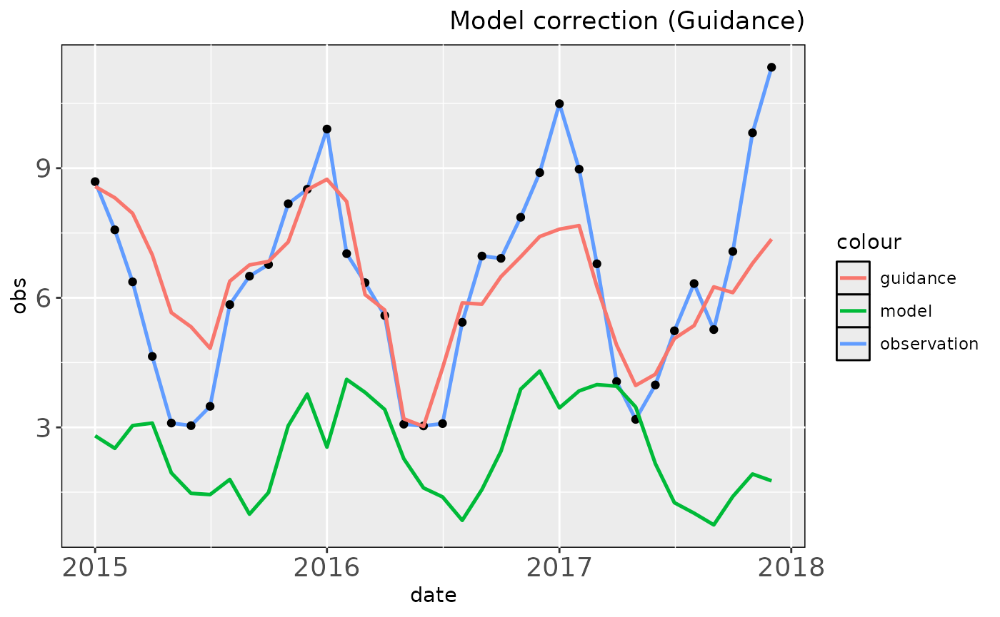

Multiple-Linear-Regression-Correction
Multiple-Linear-Regression-Correction.RmdFirst the package should be loaded:
The example data to use will be ‘eva’ and should be call it with data:
head(eva)
#> Dates evapo_obs OUT_PREC OUT_EVAP OUT_RUNOFF OUT_BASEFLOW
#> 1 2015-01-01 03:00:00 7.5 2.829 1.6771 0.3699 0.0017
#> 2 2015-01-02 03:00:00 10.5 0.065 1.2188 0.0000 0.0017
#> 3 2015-01-03 03:00:00 6.8 0.000 1.4352 0.0000 0.0017
#> 4 2015-01-04 03:00:00 6.7 1.107 1.3349 0.1247 0.0017
#> 5 2015-01-05 03:00:00 6.6 0.165 1.8848 0.0000 0.0017
#> 6 2015-01-06 03:00:00 11.1 0.000 1.7053 0.0000 0.0017
#> OUT_SOIL_MOIST_lyr_1 OUT_EVAP_CANOP OUT_SURF_TEMP
#> 1 25.2455 0.0000 29.8297
#> 2 24.8014 0.2505 22.5682
#> 3 24.2769 0.0000 25.3413
#> 4 24.5836 0.0000 27.9340
#> 5 24.0370 0.3505 29.7361
#> 6 23.4706 0.0000 31.6070A Multiple Linear Regression is made between the predictand (observed evaporation) and the following predictors:
test.predictors <- c('OUT_PREC',
'OUT_EVAP',
'OUT_RUNOFF',
'OUT_BASEFLOW',
'OUT_SOIL_MOIST_lyr_1',
'OUT_EVAP_CANOP',
'OUT_SURF_TEMP')Using multiple.guidance function to obtain the regression coefficients:
mg <- multiple.guidance(input.data = eva, predictand = 'evapo_obs', predictors = test.predictors)
mg
#>
#> Call:
#> lm(formula = as.formula(paste0(predictand, " ~ ", paste(predictors,
#> collapse = "+"))), data = input.data)
#>
#> Coefficients:
#> (Intercept) OUT_PREC OUT_EVAP
#> 2.71672 -0.02898 0.39361
#> OUT_RUNOFF OUT_BASEFLOW OUT_SOIL_MOIST_lyr_1
#> 0.38710 -888.62775 -0.10827
#> OUT_EVAP_CANOP OUT_SURF_TEMP
#> -0.05162 0.32948The evaluation of the correction applied from the mg regression is:
evaluation.eva <- mg.evaluation(input.data = eva, predictand = 'evapo_obs', predictors = test.predictors, var.model = 'OUT_EVAP', lmodel = mg)
head(evaluation.eva)
#> [[1]]
#> Dates observation model guidance
#> 1 "2015-01-01 03:00:00" "7.5" "1.6771" "9.02231246845422"
#> 2 "2015-01-02 03:00:00" "10.5" "1.2188" "6.42148880224699"
#> 3 "2015-01-03 03:00:00" "6.8" "1.4352" "7.49194236342985"
#> 4 "2015-01-04 03:00:00" "6.7" "1.3349" "8.28968257496761"
#> 5 "2015-01-05 03:00:00" "6.6" "1.8848" "9.11999714399498"
#> 6 "2015-01-06 03:00:00" "11.1" "1.7053" "9.74996281027777"
#> 7 "2015-01-07 03:00:00" "11.9" "1.3531" "8.41880283556363"
#> 8 "2015-01-08 03:00:00" "6.9" "6.3858" "9.71212610683116"
#> 9 "2015-01-09 03:00:00" "8" "1.6457" "9.36871643692524"
#> 10 "2015-01-10 03:00:00" "12.1" "1.6724" "10.0312577304694"
#> 11 "2015-01-11 03:00:00" "12.9" "1.4361" "8.51127014572082"
#> 12 "2015-01-12 03:00:00" "9" "1.8557" "9.61517054910394"
#> 13 "2015-01-13 03:00:00" "12" "1.4518" "9.73718158490413"
#> 14 "2015-01-14 03:00:00" "14.2" "7.3252" "10.1052954003839"
#> 15 "2015-01-15 03:00:00" "3.8" "0.6345" "6.68184168772327"
#> 16 "2015-01-16 03:00:00" "5" "2.3799" "7.83748635269391"
#> 17 "2015-01-17 03:00:00" "6" "1.4344" "8.23876633925106"
#> 18 "2015-01-18 03:00:00" "10" "1.6368" "8.13937191663511"
#> 19 "2015-01-19 03:00:00" "6.8" "1.5833" "9.0945651322425"
#> 20 "2015-01-20 03:00:00" NA "9.5731" "9.39552317576035"
#> 21 "2015-01-21 03:00:00" NA "1.7505" "7.19051735685519"
#> 22 "2015-01-22 03:00:00" "6.8" "2.1046" "7.58334323610683"
#> 23 "2015-01-23 03:00:00" "7" "2.3666" "8.30262381871014"
#> 24 "2015-01-24 03:00:00" "10" "2.077" "8.32165628913704"
#> 25 "2015-01-25 03:00:00" "8" "2.5189" "8.32241125080757"
#> 26 "2015-01-26 03:00:00" "8" "2.2365" "8.6052423385784"
#> 27 "2015-01-27 03:00:00" "11.1" "2.0111" "8.70181394961932"
#> 28 "2015-01-28 03:00:00" "9.9" "14.1116" "12.452877564168"
#> 29 "2015-01-29 03:00:00" NA "2.8613" "7.3183565459794"
#> 30 "2015-01-30 03:00:00" NA "2.5494" "6.93056102430575"
#> 31 "2015-01-31 03:00:00" "6" "2.7442" "7.16589654239483"
#> 32 "2015-02-01 03:00:00" "9" "2.9421" "8.68398240759317"
#> 33 "2015-02-02 03:00:00" "9" "2.5775" "9.3829580384175"
#> 34 "2015-02-03 03:00:00" "8.9" "2.5102" "8.40687324682932"
#> 35 "2015-02-04 03:00:00" "7" "2.8289" "9.01602300681138"
#> 36 "2015-02-05 03:00:00" "6.9" "2.3193" "8.63823243528362"
#> 37 "2015-02-06 03:00:00" "7" "2.7375" "8.67932942736626"
#> 38 "2015-02-07 03:00:00" "12.5" "2.5264" "8.55595115561513"
#> 39 "2015-02-08 03:00:00" "5.8" "2.4034" "8.60677179122206"
#> 40 "2015-02-09 03:00:00" "9.7" "2.7063" "9.39390301541126"
#> 41 "2015-02-10 03:00:00" "11.5" "1.9714" "7.98306212767738"
#> 42 "2015-02-11 03:00:00" "5.6" "1.9896" "7.56565737752918"
#> 43 "2015-02-12 03:00:00" "6.8" "2.083" "8.30682622392778"
#> 44 "2015-02-13 03:00:00" "7.2" "2.283" "9.18832031090806"
#> 45 "2015-02-14 03:00:00" "9" "1.4609" "7.65965712181448"
#> 46 "2015-02-15 03:00:00" "4" "4.5487" "8.81803785325414"
#> 47 "2015-02-16 03:00:00" "8.7" "1.7365" "7.96501541430038"
#> 48 "2015-02-17 03:00:00" "6.8" "2.1751" "8.00884532622582"
#> 49 "2015-02-18 03:00:00" "8" "1.8785" "8.35991505316212"
#> 50 "2015-02-19 03:00:00" NA "1.4309" "6.13464712631142"
#> 51 "2015-02-20 03:00:00" NA "1.7207" "6.57044590251612"
#> 52 "2015-02-21 03:00:00" "6.5" "1.6787" "7.05147447623645"
#> 53 "2015-02-22 03:00:00" "7.5" "2.6037" "7.975802549871"
#> 54 "2015-02-23 03:00:00" "4" "1.7978" "8.21366845633054"
#> 55 "2015-02-24 03:00:00" "6" "2.1658" "8.68705916637704"
#> 56 "2015-02-25 03:00:00" "8.5" "2.1107" "9.20420458916549"
#> 57 "2015-02-26 03:00:00" "10" "1.6985" "9.20716880779073"
#> 58 "2015-02-27 03:00:00" "7.7" "9.5115" "9.46128125831516"
#> 59 "2015-02-28 03:00:00" "3.3" "2.0022" "7.10249871061681"
#> 60 "2015-03-01 03:00:00" "3.8" "2.8378" "8.16315925737769"
#> 61 "2015-03-02 03:00:00" "8.2" "7.2167" "8.94559485261607"
#> 62 "2015-03-03 03:00:00" "1.5" "3.0572" "8.45025808236979"
#> 63 "2015-03-04 03:00:00" "6.5" "2.66" "7.3477043690192"
#> 64 "2015-03-05 03:00:00" "3" "2.6402" "7.97351056811329"
#> 65 "2015-03-06 03:00:00" "5.3" "5.3644" "9.01020176456226"
#> 66 "2015-03-07 03:00:00" "5.1" "2.7674" "8.34580329349126"
#> 67 "2015-03-08 03:00:00" "10.9" "3.3532" "8.59405111446303"
#> 68 "2015-03-09 03:00:00" "2" "3.23" "8.37489098548312"
#> 69 "2015-03-10 03:00:00" "7.2" "2.9905" "7.85065601241535"
#> 70 "2015-03-11 03:00:00" "9.3" "3.274" "8.15892157335609"
#> 71 "2015-03-12 03:00:00" "8.7" "2.7146" "8.07168183440334"
#> 72 "2015-03-13 03:00:00" "9" "2.7815" "8.49692211166873"
#> 73 "2015-03-14 03:00:00" "9" "2.9952" "9.19259700960243"
#> 74 "2015-03-15 03:00:00" "8.8" "2.7994" "9.02950980276195"
#> 75 "2015-03-16 03:00:00" "8.2" "2.6516" "9.40543943106822"
#> 76 "2015-03-17 03:00:00" "8.7" "2.6209" "9.30989691988836"
#> 77 "2015-03-18 03:00:00" "8.3" "2.5578" "8.87335647338787"
#> 78 "2015-03-19 03:00:00" "9" "2.2328" "9.30999093428684"
#> 79 "2015-03-20 03:00:00" "6.2" "6.3831" "10.7783693715314"
#> 80 "2015-03-21 03:00:00" "7.3" "1.8221" "7.85314751804578"
#> 81 "2015-03-22 03:00:00" "7" "1.7986" "6.68336799523263"
#> 82 "2015-03-23 03:00:00" "5.5" "1.6656" "6.82473887992044"
#> 83 "2015-03-24 03:00:00" "7.5" "1.759" "7.54534515201531"
#> 84 "2015-03-25 03:00:00" "2.7" "1.5367" "7.66896692216801"
#> 85 "2015-03-26 03:00:00" NA "6.9321" "7.60527632809794"
#> 86 "2015-03-27 03:00:00" NA "2.9105" "5.57651038762292"
#> 87 "2015-03-28 03:00:00" "3.2" "3.697" "5.37604063049425"
#> 88 "2015-03-29 03:00:00" "4.3" "1.2622" "5.41249458101744"
#> 89 "2015-03-30 03:00:00" "2.9" "1.5412" "6.20897130978639"
#> 90 "2015-03-31 03:00:00" "5.6" "2.2276" "6.14073395277407"
#> 91 "2015-04-01 03:00:00" "4" "2.179" "6.25328856652628"
#> 92 "2015-04-02 03:00:00" "6" "2.0167" "6.96279518103344"
#> 93 "2015-04-03 03:00:00" "7" "7.9857" "9.20703481708546"
#> 94 "2015-04-04 03:00:00" NA "7.404" "8.30267964428492"
#> 95 "2015-04-05 03:00:00" NA "2.1096" "6.76054398147546"
#> 96 "2015-04-06 03:00:00" "5.7" "2.0495" "6.43478642557039"
#> 97 "2015-04-07 03:00:00" "6.5" "2.1553" "5.78924112637124"
#> 98 "2015-04-08 03:00:00" "4.9" "2.4911" "6.79246271503634"
#> 99 "2015-04-09 03:00:00" "4.1" "2.4004" "7.72867527665466"
#> 100 "2015-04-10 03:00:00" "5.1" "2.5512" "7.87223133716508"
#> 101 "2015-04-11 03:00:00" "5.9" "2.4993" "8.05711719922265"
#> 102 "2015-04-12 03:00:00" "5" "2.1979" "7.92741160261618"
#> 103 "2015-04-13 03:00:00" "5.5" "6.2846" "8.25629495283004"
#> 104 "2015-04-14 03:00:00" "3" "2.3178" "7.38009805197781"
#> 105 "2015-04-15 03:00:00" "3.2" "1.7803" "7.19814283519276"
#> 106 "2015-04-16 03:00:00" "5" "1.969" "7.16932106937022"
#> 107 "2015-04-17 03:00:00" "5.2" "6.1933" "7.10979929589436"
#> 108 "2015-04-18 03:00:00" "6" "2.9101" "5.69120447632921"
#> 109 "2015-04-19 03:00:00" "2.9" "1.2769" "6.05999301167133"
#> 110 "2015-04-20 03:00:00" "2" "3.9225" "7.12846047476404"
#> 111 "2015-04-21 03:00:00" "3.1" "1.4452" "6.05252736805651"
#> 112 "2015-04-22 03:00:00" "2.9" "6.8214" "7.05552391316546"
#> 113 "2015-04-23 03:00:00" "6" "2.4286" "5.53078369995295"
#> 114 "2015-04-24 03:00:00" "4" "2.3716" "5.88571376836201"
#> 115 "2015-04-25 03:00:00" "3" "2.5356" "6.09725244502348"
#> 116 "2015-04-26 03:00:00" "5.5" "2.3883" "6.40598607040274"
#> 117 "2015-04-27 03:00:00" "4.5" "2.1558" "6.83955073211657"
#> 118 "2015-04-28 03:00:00" "4" "2.7902" "7.34517369560138"
#> 119 "2015-04-29 03:00:00" "5" "2.27" "6.94816142184053"
#> 120 "2015-04-30 03:00:00" "5" "3.0853" "7.54472866734021"
#> 121 "2015-05-01 03:00:00" "5" "2.7521" "8.09245322586397"
#> 122 "2015-05-02 03:00:00" "7" "5.8774" "9.33147106020342"
#> 123 "2015-05-03 03:00:00" "6.9" "2.3616" "5.40142716574274"
#> 124 "2015-05-04 03:00:00" "2.9" "1.892" "3.97769867530404"
#> 125 "2015-05-05 03:00:00" "3.3" "1.885" "4.60850243273395"
#> 126 "2015-05-06 03:00:00" "3.8" "1.8299" "4.98502269528926"
#> 127 "2015-05-07 03:00:00" "3" "1.437" "4.51522989772991"
#> 128 "2015-05-08 03:00:00" "3.6" "3.5452" "6.40408776037224"
#> 129 "2015-05-09 03:00:00" "3.7" "1.815" "5.60679615644382"
#> 130 "2015-05-10 03:00:00" "1.5" "1.7673" "5.53645955114068"
#> 131 "2015-05-11 03:00:00" "1.7" "1.5552" "4.7444706095404"
#> 132 "2015-05-12 03:00:00" "2.7" "1.5991" "4.39293818561098"
#> 133 "2015-05-13 03:00:00" "2" "1.6228" "5.07882864041974"
#> 134 "2015-05-14 03:00:00" "3.5" "1.606" "5.87272912825014"
#> 135 "2015-05-15 03:00:00" "2.6" "2.0589" "5.26871232463055"
#> 136 "2015-05-16 03:00:00" "3.3" "3.3582" "6.23201664802029"
#> 137 "2015-05-17 03:00:00" "2.7" "1.6057" "6.71576771597595"
#> 138 "2015-05-18 03:00:00" "2.8" "1.3791" "6.5000469123754"
#> 139 "2015-05-19 03:00:00" "3.1" "2.1957" "6.58158597336644"
#> 140 "2015-05-20 03:00:00" "2.9" "2.1311" "6.45072558074505"
#> 141 "2015-05-21 03:00:00" "7" "1.991" "6.96684442389683"
#> 142 "2015-05-22 03:00:00" "4" "2.8865" "7.08683101807452"
#> 143 "2015-05-23 03:00:00" "1.1" "1.275" "7.0570318090178"
#> 144 "2015-05-24 03:00:00" "2.3" "1.7068" "6.73454603838522"
#> 145 "2015-05-25 03:00:00" "3.5" "0.7563" "5.38822614523782"
#> 146 "2015-05-26 03:00:00" "1.3" "0.6324" "4.58470164493462"
#> 147 "2015-05-27 03:00:00" "1.8" "0.9758" "4.35422440272028"
#> 148 "2015-05-28 03:00:00" "1.1" "1.1327" "4.18382232771775"
#> 149 "2015-05-29 03:00:00" "2.3" "1.9467" "4.19004931242456"
#> 150 "2015-05-30 03:00:00" "1.5" "1.1946" "4.23639980795916"
#> 151 "2015-05-31 03:00:00" "2.2" "1.5663" "4.27659591854339"
#> 152 "2015-06-01 03:00:00" "2" "1.3529" "4.40509971134277"
#> 153 "2015-06-02 03:00:00" "4" "1.561" "5.42451369137744"
#> 154 "2015-06-03 03:00:00" "1.6" "1.2295" "6.03408015385211"
#> 155 "2015-06-04 03:00:00" "2.5" "1.9127" "7.28612785618901"
#> 156 "2015-06-05 03:00:00" "2" "2.186" "7.94220339569608"
#> 157 "2015-06-06 03:00:00" "7" "1.8823" "7.7364176210253"
#> 158 "2015-06-07 03:00:00" "5.5" "1.7656" "7.63347454857765"
#> 159 "2015-06-08 03:00:00" "4.2" "1.5437" "7.68264120609238"
#> 160 "2015-06-09 03:00:00" "4.3" "1.8901" "8.03503227074535"
#> 161 "2015-06-10 03:00:00" "4.2" "1.3078" "6.4434116108779"
#> 162 "2015-06-11 03:00:00" "1.8" "1.1148" "4.93548517345411"
#> 163 "2015-06-12 03:00:00" "3" "1.059" "4.46280833461639"
#> 164 "2015-06-13 03:00:00" "3.5" "0.8674" "4.30022524084401"
#> 165 "2015-06-14 03:00:00" "0" "1.1415" "4.1671950414326"
#> 166 "2015-06-15 03:00:00" "4.4" "1.2706" "3.69346985181949"
#> 167 "2015-06-16 03:00:00" "2.5" "1.0742" "3.88418664014242"
#> 168 "2015-06-17 03:00:00" "2.8" "1.7874" "4.32952088789199"
#> 169 "2015-06-18 03:00:00" "4" "0.7579" "3.09372807208926"
#> 170 "2015-06-19 03:00:00" "4" "0.7464" "2.46441318759401"
#> 171 "2015-06-20 03:00:00" "3.8" "1.3518" "4.00948337018021"
#> 172 "2015-06-21 03:00:00" "2.6" "1.3195" "5.21897648905559"
#> 173 "2015-06-22 03:00:00" "2.1" "1.5265" "5.57339953673587"
#> 174 "2015-06-23 03:00:00" "5.5" "1.7372" "3.57955947378215"
#> 175 "2015-06-24 03:00:00" "1" "0.3026" "2.81315708769349"
#> 176 "2015-06-25 03:00:00" "0.4" "1.5775" "5.63155273169982"
#> 177 "2015-06-26 03:00:00" "2.9" "0.7672" "5.56572768985804"
#> 178 "2015-06-27 03:00:00" "1.1" "1.2052" "6.39240306390668"
#> 179 "2015-06-28 03:00:00" "3" "1.777" "6.05345183476442"
#> 180 "2015-06-29 03:00:00" "0.6" "3.7846" "5.77382082253512"
#> 181 "2015-06-30 03:00:00" "4.9" "2.3906" "5.27042514417097"
#> 182 "2015-07-01 03:00:00" "1.8" "1.2032" "4.37856776868525"
#> 183 "2015-07-02 03:00:00" "2.9" "0.9291" "4.20706080347914"
#> 184 "2015-07-03 03:00:00" "1.1" "1.379" "3.4721251976351"
#> 185 "2015-07-04 03:00:00" "4" "0.6421" "1.79291058977361"
#> 186 "2015-07-05 03:00:00" "1.8" "1.071" "2.7323588788481"
#> 187 "2015-07-06 03:00:00" "2.2" "0.7199" "3.63713547550914"
#> 188 "2015-07-07 03:00:00" "3" "1.2637" "4.02227370894073"
#> 189 "2015-07-08 03:00:00" "1.6" "1.0893" "4.0102225870629"
#> 190 "2015-07-09 03:00:00" "1.4" "1.5781" "4.44074859040475"
#> 191 "2015-07-10 03:00:00" "4" "1.0539" "4.88435376630289"
#> 192 "2015-07-11 03:00:00" "1.2" "1.1443" "5.39744640728552"
#> 193 "2015-07-12 03:00:00" "1.2" "1.046" "5.64570102872204"
#> 194 "2015-07-13 03:00:00" "1" "1.3302" "4.74191926781553"
#> 195 "2015-07-14 03:00:00" "2.1" "0.911" "3.01934673306367"
#> 196 "2015-07-15 03:00:00" "4.1" "1.0256" "2.75572600818508"
#> 197 "2015-07-16 03:00:00" "3" "0.8889" "2.82469910120525"
#> 198 "2015-07-17 03:00:00" "1" "1.0882" "3.89121316993997"
#> 199 "2015-07-18 03:00:00" "2" "1.872" "5.73848090925975"
#> 200 "2015-07-19 03:00:00" "4" "2.177" "7.42634894139617"
#> 201 "2015-07-20 03:00:00" "7.8" "1.1844" "4.49788113051396"
#> 202 "2015-07-21 03:00:00" "5.9" "1.2255" "2.83072330989811"
#> 203 "2015-07-22 03:00:00" "4.2" "0.9604" "3.35571643852079"
#> 204 "2015-07-23 03:00:00" "3.1" "1.4051" "4.50079327456833"
#> 205 "2015-07-24 03:00:00" "3.5" "1.2782" "3.98683131250415"
#> 206 "2015-07-25 03:00:00" "3.5" "1.2123" "4.03060956419936"
#> 207 "2015-07-26 03:00:00" "3.9" "3.4839" "5.55895721768205"
#> 208 "2015-07-27 03:00:00" "4.1" "1.9093" "6.96745008699673"
#> 209 "2015-07-28 03:00:00" "5.8" "3.6792" "8.92716943620645"
#> 210 "2015-07-29 03:00:00" "7.2" "1.6911" "8.2323924341667"
#> 211 "2015-07-30 03:00:00" "5.2" "2.4326" "9.0968543573636"
#> 212 "2015-07-31 03:00:00" "10.5" "1.9024" "8.76796449336948"
#> 213 "2015-08-01 03:00:00" "7.3" "1.8608" "8.65740261943208"
#> 214 "2015-08-02 03:00:00" "9" "1.5959" "8.80268435100099"
#> 215 "2015-08-03 03:00:00" "9" "1.6679" "8.36631332407472"
#> 216 "2015-08-04 03:00:00" "6" "1.1458" "8.30922590187328"
#> 217 "2015-08-05 03:00:00" "4.8" "2.4516" "9.23997939013613"
#> 218 "2015-08-06 03:00:00" "10" "1.0632" "9.2974111810385"
#> 219 "2015-08-07 03:00:00" "9.2" "1.1373" "9.15932436263621"
#> 220 "2015-08-08 03:00:00" "4.3" "1.092" "8.84998730490409"
#> 221 "2015-08-09 03:00:00" "7.5" "0.8996" "7.51412614134034"
#> 222 "2015-08-10 03:00:00" "11.8" "1.4996" "5.02207041606393"
#> 223 "2015-08-11 03:00:00" "1.9" "0.6804" "4.65336434315937"
#> 224 "2015-08-12 03:00:00" "2.1" "4.5016" "5.27860699323577"
#> 225 "2015-08-13 03:00:00" "1.5" "2.0251" "3.16195074093665"
#> 226 "2015-08-14 03:00:00" "3.1" "0.7631" "2.38814624176039"
#> 227 "2015-08-15 03:00:00" "0.4" "1.7729" "3.47951575784789"
#> 228 "2015-08-16 03:00:00" "0" "0.4363" "2.75730963564163"
#> 229 "2015-08-17 03:00:00" "7.7" "2.5441" "3.19985229435441"
#> 230 "2015-08-18 03:00:00" "2" "1.5284" "3.81634166182209"
#> 231 "2015-08-19 03:00:00" "1" "1.372" "4.23900595047443"
#> 232 "2015-08-20 03:00:00" "5" "1.3144" "4.56834431005884"
#> 233 "2015-08-21 03:00:00" "4" "1.8632" "5.4278369395929"
#> 234 "2015-08-22 03:00:00" "8" "2.2244" "6.76673215164392"
#> 235 "2015-08-23 03:00:00" "4" "1.3911" "5.4598449942914"
#> 236 "2015-08-24 03:00:00" "8" "1.2945" "4.52913059131106"
#> 237 "2015-08-25 03:00:00" "5.2" "1.9472" "5.48703545404837"
#> 238 "2015-08-26 03:00:00" "3.8" "2.8658" "8.00924018290402"
#> 239 "2015-08-27 03:00:00" "8" "2.0103" "6.401437586557"
#> 240 "2015-08-28 03:00:00" "9" "2.5721" "7.24645802853388"
#> 241 "2015-08-29 03:00:00" "8" "2.7577" "8.57137130805808"
#> 242 "2015-08-30 03:00:00" "9.5" "2.7235" "9.17633032797025"
#> 243 "2015-08-31 03:00:00" "10" "2.6058" "10.0494036398214"
#> 244 "2015-09-01 03:00:00" NA "1.9511" "8.02372291774449"
#> 245 "2015-09-02 03:00:00" NA "1.1878" "5.82055474523123"
#> 246 "2015-09-03 03:00:00" "4.1" "1.2863" "5.97971446877559"
#> 247 "2015-09-04 03:00:00" "3.9" "1.3771" "5.42061041359685"
#> 248 "2015-09-05 03:00:00" "6.2" "1.36" "5.75820940845029"
#> 249 "2015-09-06 03:00:00" "5" "1.3652" "5.98897043408523"
#> 250 "2015-09-07 03:00:00" "5" "2.0778" "7.22682218982652"
#> 251 "2015-09-08 03:00:00" "7.5" "1.6226" "7.08647155859914"
#> 252 "2015-09-09 03:00:00" "5.5" "1.6659" "7.00616233348748"
#> 253 "2015-09-10 03:00:00" "5.9" "0.9631" "5.7107779894368"
#> 254 "2015-09-11 03:00:00" "7.1" "0.889" "4.2946151851516"
#> 255 "2015-09-12 03:00:00" "4.5" "1.0154" "4.72721308219067"
#> 256 "2015-09-13 03:00:00" "5.5" "1.1545" "5.64001109964743"
#> 257 "2015-09-14 03:00:00" "9.9" "1.232" "6.70055734222342"
#> 258 "2015-09-15 03:00:00" "8.6" "1.2148" "8.75636659981522"
#> 259 "2015-09-16 03:00:00" "10.7" "1.1913" "8.73778528935939"
#> 260 "2015-09-17 03:00:00" "9.3" "0.6987" "6.91108957902981"
#> 261 "2015-09-18 03:00:00" "11.5" "0.7477" "7.08392655945163"
#> 262 "2015-09-19 03:00:00" "6" "0.5899" "7.26951838429459"
#> 263 "2015-09-20 03:00:00" "7.5" "1.0147" "7.7125277449116"
#> 264 "2015-09-21 03:00:00" "4.3" "0.8343" "9.26890718094973"
#> 265 "2015-09-22 03:00:00" "4.2" "0.7745" "8.33319614326534"
#> 266 "2015-09-23 03:00:00" "6" "0.3657" "6.32125388645725"
#> 267 "2015-09-24 03:00:00" "8" "0.2748" "5.51641465640761"
#> 268 "2015-09-25 03:00:00" "3" "0.5369" "5.94501952820399"
#> 269 "2015-09-26 03:00:00" "4.1" "0.444" "6.44554218306553"
#> 270 "2015-09-27 03:00:00" "6" "0.5312" "6.55607556182058"
#> 271 "2015-09-28 03:00:00" "6.8" "0.5177" "7.10609337545432"
#> 272 "2015-09-29 03:00:00" "6.2" "0.4274" "7.72092455064292"
#> 273 "2015-09-30 03:00:00" "9.7" "0.4261" "7.72229233416041"
#> 274 "2015-10-01 03:00:00" "16.9" "0.282" "8.57700878157939"
#> 275 "2015-10-02 03:00:00" "6.5" "0.2642" "7.24630246413355"
#> 276 "2015-10-03 03:00:00" "4.3" "0.1029" "4.95225758700779"
#> 277 "2015-10-04 03:00:00" "7.1" "0.2655" "6.13099103680532"
#> 278 "2015-10-05 03:00:00" "8" "0.1717" "7.50628071943945"
#> 279 "2015-10-06 03:00:00" "7" "0.5742" "9.55490386972104"
#> 280 "2015-10-07 03:00:00" "12" "0.2871" "8.45908698228448"
#> 281 "2015-10-08 03:00:00" "8" "0.0928" "4.12271604857085"
#> 282 "2015-10-09 03:00:00" "1.5" "4.9998" "4.87450058361794"
#> 283 "2015-10-10 03:00:00" "1.5" "3.7938" "4.12150716908107"
#> 284 "2015-10-11 03:00:00" "0.9" "0.7226" "3.42377230494868"
#> 285 "2015-10-12 03:00:00" "2" "0.6975" "4.10094073824682"
#> 286 "2015-10-13 03:00:00" "4" "2.1231" "5.72162770284974"
#> 287 "2015-10-14 03:00:00" "7" "1.2309" "7.9088992895448"
#> 288 "2015-10-15 03:00:00" "9" "0.9997" "7.19263669883664"
#> 289 "2015-10-16 03:00:00" "9.9" "0.8245" "6.12507899006491"
#> 290 "2015-10-17 03:00:00" "9.6" "0.7391" "5.93357857034877"
#> 291 "2015-10-18 03:00:00" "7.3" "0.8897" "5.87681164812103"
#> 292 "2015-10-19 03:00:00" "6.2" "1.0743" "8.14588136281387"
#> 293 "2015-10-20 03:00:00" "7" "0.9205" "7.75329933271288"
#> 294 "2015-10-21 03:00:00" "7.2" "0.9504" "7.51383460516913"
#> 295 "2015-10-22 03:00:00" "6.8" "0.8869" "7.90798496742699"
#> 296 "2015-10-23 03:00:00" "11" "0.7991" "7.9581794856091"
#> 297 "2015-10-24 03:00:00" "10" "0.6228" "6.93722059766924"
#> 298 "2015-10-25 03:00:00" "6" "6.8345" "9.21072510596063"
#> 299 "2015-10-26 03:00:00" "7" "0.3896" "6.24056505004544"
#> 300 "2015-10-27 03:00:00" "0.8" "1.0855" "7.07089980357125"
#> 301 "2015-10-28 03:00:00" "4.9" "0.8186" "7.56496998927272"
#> 302 "2015-10-29 03:00:00" "7.9" "11.0532" "11.2384736718504"
#> 303 "2015-10-30 03:00:00" "10.5" "0.9555" "6.54875839613451"
#> 304 "2015-10-31 03:00:00" "2.1" "0.8029" "6.15100681394289"
#> 305 "2015-11-01 03:00:00" "6.8" "0.7858" "6.27060687201538"
#> 306 "2015-11-02 03:00:00" "3.5" "0.6251" "6.30836973774451"
#> 307 "2015-11-03 03:00:00" "6.6" "1.148" "6.25306301914495"
#> 308 "2015-11-04 03:00:00" "7.8" "3.4833" "6.23053406446783"
#> 309 "2015-11-05 03:00:00" "3.5" "0.7298" "5.61266678944177"
#> 310 "2015-11-06 03:00:00" "7" "0.7731" "5.89556010820713"
#> 311 "2015-11-07 03:00:00" "5" "0.8071" "6.27656987907294"
#> 312 "2015-11-08 03:00:00" "8" "0.8212" "7.5644505110645"
#> 313 "2015-11-09 03:00:00" "9" "1.5165" "8.95471748939694"
#> 314 "2015-11-10 03:00:00" "12" "0.7976" "10.0569576118113"
#> 315 "2015-11-11 03:00:00" NA "6.9305" "8.66450757162362"
#> 316 "2015-11-12 03:00:00" NA "2.7309" "8.33391629351274"
#> 317 "2015-11-13 03:00:00" "8" "2.5312" "7.19583467352425"
#> 318 "2015-11-14 03:00:00" "10.5" "3.0861" "6.81184024472792"
#> 319 "2015-11-15 03:00:00" "7.5" "3.0989" "7.37425705128317"
#> 320 "2015-11-16 03:00:00" "10.7" "8.7314" "8.99994826982385"
#> 321 "2015-11-17 03:00:00" "7.3" "3.2824" "9.92108523916506"
#> 322 "2015-11-18 03:00:00" NA "3.6599" "7.16497352935676"
#> 323 "2015-11-19 03:00:00" NA "3.8045" "6.81741758142803"
#> 324 "2015-11-20 03:00:00" "8.9" "3.5901" "4.89988520539303"
#> 325 "2015-11-21 03:00:00" "7.2" "4.0113" "5.71487151768416"
#> 326 "2015-11-22 03:00:00" "8" "4.1294" "6.85185805014261"
#> 327 "2015-11-23 03:00:00" "9.2" "4.5936" "7.7659749368481"
#> 328 "2015-11-24 03:00:00" "8.8" "3.8767" "7.97019912977824"
#> 329 "2015-11-25 03:00:00" "8.9" "4.469" "8.57049067675992"
#> 330 "2015-11-26 03:00:00" "10.6" "4.4652" "9.09993430669367"
#> 331 "2015-11-27 03:00:00" "11" "3.4951" "8.64799404252236"
#> 332 "2015-11-28 03:00:00" "7.3" "3.515" "6.77776658462828"
#> 333 "2015-11-29 03:00:00" "10" "3.5689" "6.50755768196039"
#> 334 "2015-11-30 03:00:00" "9.5" "2.0274" "5.24554768316829"
#> 335 "2015-12-01 03:00:00" "1.9" "7.5524" "7.9979533378362"
#> 336 "2015-12-02 03:00:00" "5.5" "1.8969" "6.15433273801848"
#> 337 "2015-12-03 03:00:00" "1.5" "3.3102" "7.33216726931372"
#> 338 "2015-12-04 03:00:00" "4" "3.2319" "7.92418978602167"
#> 339 "2015-12-05 03:00:00" "8" "3.037" "6.97563611655515"
#> 340 "2015-12-06 03:00:00" "4" "3.0808" "7.19561023591357"
#> 341 "2015-12-07 03:00:00" "9" "3.4118" "7.57009014336213"
#> 342 "2015-12-08 03:00:00" "10.5" "3.742" "8.72264201685591"
#> 343 "2015-12-09 03:00:00" "9.5" "3.0349" "8.11520795182867"
#> 344 "2015-12-10 03:00:00" "8.9" "3.373" "7.59661913749125"
#> 345 "2015-12-11 03:00:00" "7.9" "3.2456" "8.46703243109415"
#> 346 "2015-12-12 03:00:00" "10.2" "2.8754" "9.47227600759626"
#> 347 "2015-12-13 03:00:00" "12.7" "3.0279" "8.36614958705451"
#> 348 "2015-12-14 03:00:00" "7.8" "2.8366" "8.71696057796624"
#> 349 "2015-12-15 03:00:00" "7" "2.1281" "7.42030239798411"
#> 350 "2015-12-16 03:00:00" "6.5" "2.8621" "8.44508457452346"
#> 351 "2015-12-17 03:00:00" "8.5" "2.5309" "10.241806322184"
#> 352 "2015-12-18 03:00:00" "14" "1.9338" "8.36204234746356"
#> 353 "2015-12-19 03:00:00" "12.5" "1.7348" "6.920910921165"
#> 354 "2015-12-20 03:00:00" "11" "1.6693" "7.37887414373666"
#> 355 "2015-12-21 03:00:00" "5.5" "2.3677" "8.64943651093986"
#> 356 "2015-12-22 03:00:00" "8.5" "2.0221" "10.0790081119854"
#> 357 "2015-12-23 03:00:00" "16" "16.0136" "13.3657022929876"
#> 358 "2015-12-24 03:00:00" "15" "4.5597" "7.79044478134806"
#> 359 "2015-12-25 03:00:00" "3.5" "1.7896" "7.62917155035955"
#> 360 "2015-12-26 03:00:00" "7.5" "2.7265" "8.78548509673818"
#> 361 "2015-12-27 03:00:00" "9" "1.8627" "9.2319709285971"
#> 362 "2015-12-28 03:00:00" "10" "7.5464" "10.3489885221583"
#> 363 "2015-12-29 03:00:00" "6" "1.7087" "8.5239533576745"
#> 364 "2015-12-30 03:00:00" "6" "12.3485" "11.7875425818109"
#> 365 "2015-12-31 03:00:00" "16" "3.3905" "7.99567749992287"
#> 366 "2016-01-01 03:00:00" "4" "1.6247" "7.99878012730538"
#> 367 "2016-01-02 03:00:00" "7" "2.3929" "8.91284010940427"
#> 368 "2016-01-03 03:00:00" "9" "1.591" "8.3485870708607"
#> 369 "2016-01-04 03:00:00" "9" "3.302" "8.19331862266251"
#> 370 "2016-01-05 03:00:00" "4" "1.3685" "7.8594596222767"
#> 371 "2016-01-06 03:00:00" "7" "1.8221" "8.29289739125947"
#> 372 "2016-01-07 03:00:00" "7.8" "1.521" "8.04368012182232"
#> 373 "2016-01-08 03:00:00" "8.2" "8.0465" "10.0842082403583"
#> 374 "2016-01-09 03:00:00" "9" "1.5273" "8.49445701513013"
#> 375 "2016-01-10 03:00:00" "7.9" "1.9145" "9.21162634342619"
#> 376 "2016-01-11 03:00:00" "10.1" "1.7224" "9.39181038270517"
#> 377 "2016-01-12 03:00:00" "14" "4.5849" "10.2059956275494"
#> 378 "2016-01-13 03:00:00" "15" "2.0924" "8.09131198603037"
#> 379 "2016-01-14 03:00:00" "3.5" "1.9147" "8.5696762027358"
#> 380 "2016-01-15 03:00:00" "7.1" "1.8415" "8.64383485201855"
#> 381 "2016-01-16 03:00:00" "11.8" "2.2563" "8.7092020107008"
#> 382 "2016-01-17 03:00:00" "11.2" "1.95" "9.06666798364489"
#> 383 "2016-01-18 03:00:00" "11.1" "2.1699" "9.45279868834326"
#> 384 "2016-01-19 03:00:00" "11.9" "2.1336" "8.99711106480717"
#> 385 "2016-01-20 03:00:00" "12" "2.1088" "9.01600067815784"
#> 386 "2016-01-21 03:00:00" "13" "1.9527" "8.98131723647503"
#> 387 "2016-01-22 03:00:00" "12.5" "2.1633" "9.23855864764382"
#> 388 "2016-01-23 03:00:00" "13.5" "1.8698" "9.42152345796043"
#> 389 "2016-01-24 03:00:00" "13.3" "1.8509" "10.1829308152718"
#> 390 "2016-01-25 03:00:00" "15.7" "1.4663" "13.1779700351829"
#> 391 "2016-01-26 03:00:00" NA "2.1844" "6.576546784583"
#> 392 "2016-01-27 03:00:00" "9.2" "2.9876" "6.76548579192415"
#> 393 "2016-01-28 03:00:00" "9.6" "3.2153" "7.32720255250514"
#> 394 "2016-01-29 03:00:00" "10" "3.5342" "8.84523762384649"
#> 395 "2016-01-30 03:00:00" "13.2" "6.4957" "7.73201274386276"
#> 396 "2016-01-31 03:00:00" "6.6" "3.2328" "7.18679101344152"
#> 397 "2016-02-01 03:00:00" NA "3.3398" "7.42110186179089"
#> 398 "2016-02-02 03:00:00" NA "4.1473" "7.22537844422105"
#> 399 "2016-02-03 03:00:00" "5.5" "2.7725" "6.98701153471411"
#> 400 "2016-02-04 03:00:00" "7.5" "4.2276" "7.92619400261204"
#> 401 "2016-02-05 03:00:00" "7.1" "2.9045" "7.548021133867"
#> 402 "2016-02-06 03:00:00" "2.9" "3.4863" "7.93725239475351"
#> 403 "2016-02-07 03:00:00" "7" "3.1041" "8.44146378545201"
#> 404 "2016-02-08 03:00:00" "7" "8.2809" "10.6482369148365"
#> 405 "2016-02-09 03:00:00" "13" "2.1221" "8.27483359876102"
#> 406 "2016-02-10 03:00:00" "1" "6.6082" "8.83148353412506"
#> 407 "2016-02-11 03:00:00" "13.5" "3.4394" "7.84909097158887"
#> 408 "2016-02-12 03:00:00" "5.3" "3.6076" "8.58301092104461"
#> 409 "2016-02-13 03:00:00" "6.2" "5.978" "9.4344669591971"
#> 410 "2016-02-14 03:00:00" "7" "3.4252" "8.03902211232932"
#> 411 "2016-02-15 03:00:00" "8" "7.9076" "9.32239530004047"
#> 412 "2016-02-16 03:00:00" "6" "4.1977" "8.61904627562418"
#> 413 "2016-02-17 03:00:00" "13" "3.8645" "9.15623095828321"
#> 414 "2016-02-18 03:00:00" "11" "3.7429" "9.1292191591988"
#> 415 "2016-02-19 03:00:00" "16.5" "7.4704" "9.88502708015864"
#> 416 "2016-02-20 03:00:00" "3.5" "2.4354" "6.24736902340181"
#> 417 "2016-02-21 03:00:00" "3.5" "3.709" "7.51667467741406"
#> 418 "2016-02-22 03:00:00" "1.1" "3.4023" "7.99939089743017"
#> 419 "2016-02-23 03:00:00" "2" "5.756" "8.62189088064305"
#> 420 "2016-02-24 03:00:00" "8" "3.3442" "8.41731917200578"
#> 421 "2016-02-25 03:00:00" "8" "3.4529" "8.71910715421419"
#> 422 "2016-02-26 03:00:00" "7" "3.4605" "9.2667977314963"
#> 423 "2016-02-27 03:00:00" "6" "2.7759" "6.39419419110531"
#> 424 "2016-02-28 03:00:00" "7" "3.1586" "6.86221733348386"
#> 425 "2016-02-29 03:00:00" "6" "3.0909" "7.3465789446606"
#> 426 "2016-03-01 03:00:00" NA "7.1896" "8.37348225202867"
#> 427 "2016-03-02 03:00:00" NA "2.8667" "5.76251171207538"
#> 428 "2016-03-03 03:00:00" "5.5" "3.1799" "5.70016809731567"
#> 429 "2016-03-04 03:00:00" "7.5" "3.929" "6.0846394616781"
#> 430 "2016-03-05 03:00:00" "7.1" "3.8344" "6.14081745323925"
#> 431 "2016-03-06 03:00:00" "2.9" "3.7559" "6.43073096288395"
#> 432 "2016-03-07 03:00:00" "7" "3.6211" "6.33371372864592"
#> 433 "2016-03-08 03:00:00" "7" "5.7318" "5.891627896807"
#> 434 "2016-03-09 03:00:00" "13" "3.7464" "5.32192745915218"
#> 435 "2016-03-10 03:00:00" "1" "3.2842" "5.39618191646435"
#> 436 "2016-03-11 03:00:00" "13.5" "3.5227" "4.90214268371099"
#> 437 "2016-03-12 03:00:00" "5.3" "3.3037" "5.0978665745894"
#> 438 "2016-03-13 03:00:00" "6.2" "3.6387" "5.73866688290128"
#> 439 "2016-03-14 03:00:00" "7" "3.9416" "6.32413854067107"
#> 440 "2016-03-15 03:00:00" "8" "4.1937" "7.35246519133224"
#> 441 "2016-03-16 03:00:00" "6" "3.9877" "8.38510002186725"
#> 442 "2016-03-17 03:00:00" NA "4.5393" "9.20048965497499"
#> 443 "2016-03-18 03:00:00" NA "3.7057" "8.35575050885697"
#> 444 "2016-03-19 03:00:00" NA "6.7093" "6.39348069474689"
#> 445 "2016-03-20 03:00:00" "3.5" "4.4398" "5.45239796653609"
#> 446 "2016-03-21 03:00:00" "3.5" "1.6364" "3.86901110994307"
#> 447 "2016-03-22 03:00:00" "1.1" "1.6794" "4.94575795295794"
#> 448 "2016-03-23 03:00:00" "2" "5.8773" "6.38237259852639"
#> 449 "2016-03-24 03:00:00" "8" "2.9091" "5.15109885587857"
#> 450 "2016-03-25 03:00:00" "8" "2.7956" "4.70099837541216"
#> 451 "2016-03-26 03:00:00" "7" "2.9182" "4.52665657962691"
#> 452 "2016-03-27 03:00:00" "6" "3.7294" "4.92676919077053"
#> 453 "2016-03-28 03:00:00" "7" "3.7522" "5.38189848388298"
#> 454 "2016-03-29 03:00:00" "6" "3.2283" "5.68111839878498"
#> 455 "2016-03-30 03:00:00" "7" "3.4965" "6.75089777787562"
#> 456 "2016-03-31 03:00:00" "9" "2.9591" "7.35114292214383"
#> 457 "2016-04-01 03:00:00" "6.6" "4.4869" "8.43589277826816"
#> 458 "2016-04-02 03:00:00" "11" "4.9474" "9.1625069437578"
#> 459 "2016-04-03 03:00:00" "9.5" "3.1592" "7.49443531173014"
#> 460 "2016-04-04 03:00:00" "5.9" "4.0678" "8.88275083544"
#> 461 "2016-04-05 03:00:00" "10.6" "4.1617" "9.07759400526211"
#> 462 "2016-04-06 03:00:00" "8.8" "3.1401" "7.33252607301809"
#> 463 "2016-04-07 03:00:00" "5.4" "5.326" "9.07102298326889"
#> 464 "2016-04-08 03:00:00" "8.5" "3.6853" "8.60049337820568"
#> 465 "2016-04-09 03:00:00" "8.9" "5.157" "7.92845941077134"
#> 466 "2016-04-10 03:00:00" "9.6" "2.2842" "5.26486967564571"
#> 467 "2016-04-11 03:00:00" "1.5" "1.592" "4.52889824427641"
#> 468 "2016-04-12 03:00:00" "3.9" "2.9228" "5.40569211955604"
#> 469 "2016-04-13 03:00:00" "0.4" "1.4777" "4.44546434871467"
#> 470 "2016-04-14 03:00:00" "3" "3.3465" "6.43682807588792"
#> 471 "2016-04-15 03:00:00" "4.5" "3.5678" "7.71723122054764"
#> 472 "2016-04-16 03:00:00" "7.9" "3.8132" "8.00563100531568"
#> 473 "2016-04-17 03:00:00" "8.1" "3.8203" "7.97306787919608"
#> 474 "2016-04-18 03:00:00" "5" "4.2279" "6.62837282150046"
#> 475 "2016-04-19 03:00:00" "4.5" "1.1914" "6.77016968456381"
#> 476 "2016-04-20 03:00:00" NA "2.8133" "2.85311424915902"
#> 477 "2016-04-21 03:00:00" "5.5" "3.0128" "3.50094960940991"
#> 478 "2016-04-22 03:00:00" "3" "2.2936" "3.35908246379965"
#> 479 "2016-04-23 03:00:00" "3" "4.1436" "5.92450013936458"
#> 480 "2016-04-24 03:00:00" "3" "4.2396" "6.20182184243236"
#> 481 "2016-04-25 03:00:00" "7" "7.1031" "4.20658586833141"
#> 482 "2016-04-26 03:00:00" "3" "2.6443" "1.4140361575608"
#> 483 "2016-04-27 03:00:00" "4.1" "2.1754" "0.56208590647103"
#> 484 "2016-04-28 03:00:00" "3" "2.4905" "1.13472757215485"
#> 485 "2016-04-29 03:00:00" "4" "2.6515" "1.56763198837021"
#> 486 "2016-04-30 03:00:00" "2.9" "2.4466" "1.59277780442584"
#> 487 "2016-05-01 03:00:00" "6" "3.3913" "2.36075410903536"
#> 488 "2016-05-02 03:00:00" "4" "3.1608" "2.9676028020548"
#> 489 "2016-05-03 03:00:00" "1" "3.504" "3.5533318003639"
#> 490 "2016-05-04 03:00:00" "6.8" "3.8146" "3.91473529872432"
#> 491 "2016-05-05 03:00:00" "1" "2.7054" "3.67607235423687"
#> 492 "2016-05-06 03:00:00" "2.9" "3.0266" "4.43231905212994"
#> 493 "2016-05-07 03:00:00" "4.1" "1.7542" "3.23954279984964"
#> 494 "2016-05-08 03:00:00" "2" "1.8526" "4.10823878589574"
#> 495 "2016-05-09 03:00:00" "2.3" "1.6626" "3.76367159093444"
#> 496 "2016-05-10 03:00:00" "1.5" "2.2992" "3.97059982723912"
#> 497 "2016-05-11 03:00:00" "2.5" "2.555" "4.06189567044249"
#> 498 "2016-05-12 03:00:00" "3.9" "1.4001" "3.26746158345303"
#> 499 "2016-05-13 03:00:00" "2.1" "2.4416" "3.42853922887055"
#> 500 "2016-05-14 03:00:00" "3" "1.8941" "3.15774286250921"
#> 501 "2016-05-15 03:00:00" "0" "2.3827" "3.95363334797577"
#> 502 "2016-05-16 03:00:00" "4.5" "1.8458" "2.409626939274"
#> 503 "2016-05-17 03:00:00" "2.9" "1.6031" "1.8456308748915"
#> 504 "2016-05-18 03:00:00" "3.1" "1.78" "2.03419688325484"
#> 505 "2016-05-19 03:00:00" "2" "2.3996" "3.0299151732683"
#> 506 "2016-05-20 03:00:00" "4" "1.8906" "3.10381619655911"
#> 507 "2016-05-21 03:00:00" "6" "1.9129" "2.39079802573098"
#> 508 "2016-05-22 03:00:00" "2.8" "2.2401" "2.4731396172517"
#> 509 "2016-05-23 03:00:00" "5" "2.3338" "2.52709140600463"
#> 510 "2016-05-24 03:00:00" "2.2" "2.2934" "2.92353683794521"
#> 511 "2016-05-25 03:00:00" "2.5" "2.806" "4.51698541861675"
#> 512 "2016-05-26 03:00:00" "3.3" "1.9968" "4.43140417105899"
#> 513 "2016-05-27 03:00:00" "5.2" "1.1644" "3.40130543646422"
#> 514 "2016-05-28 03:00:00" "0.4" "2.2249" "2.6106882736037"
#> 515 "2016-05-29 03:00:00" "0.8" "1.9891" "1.90118578498656"
#> 516 "2016-05-30 03:00:00" "6.7" "1.8249" "2.67867225208444"
#> 517 "2016-05-31 03:00:00" "0.8" "2.3375" "3.00851239414809"
#> 518 "2016-06-01 03:00:00" "3.5" "2.3767" "3.2284319207439"
#> 519 "2016-06-02 03:00:00" "3.5" "1.9092" "2.86636775293074"
#> 520 "2016-06-03 03:00:00" "0.5" "2.5345" "3.14463241499029"
#> 521 "2016-06-04 03:00:00" "2" "2.3581" "3.18587774186584"
#> 522 "2016-06-05 03:00:00" "3" "1.3001" "2.18155750298296"
#> 523 "2016-06-06 03:00:00" "3.5" "1.2738" "1.96492162313709"
#> 524 "2016-06-07 03:00:00" "3.5" "1.9546" "2.36306985300789"
#> 525 "2016-06-08 03:00:00" "2.1" "2.1371" "2.95960551870743"
#> 526 "2016-06-09 03:00:00" "3.1" "1.9892" "3.01193209472821"
#> 527 "2016-06-10 03:00:00" "5.8" "1.8867" "2.67663607656672"
#> 528 "2016-06-11 03:00:00" "2.5" "1.231" "1.60948085740375"
#> 529 "2016-06-12 03:00:00" "3.5" "1.4757" "1.89070793586288"
#> 530 "2016-06-13 03:00:00" "3.8" "1.758" "2.8592629926762"
#> 531 "2016-06-14 03:00:00" "3.3" "2.3638" "4.52290428909721"
#> 532 "2016-06-15 03:00:00" "4.9" "1.582" "4.70419279191021"
#> 533 "2016-06-16 03:00:00" "2" "1.6365" "4.37137581109988"
#> 534 "2016-06-17 03:00:00" "4" "1.3785" "3.09191970977175"
#> 535 "2016-06-18 03:00:00" "4" "1.4859" "2.85924832418512"
#> 536 "2016-06-19 03:00:00" "3.8" "1.4993" "2.69540260337546"
#> 537 "2016-06-20 03:00:00" "2.3" "1.2597" "2.88805629468081"
#> 538 "2016-06-21 03:00:00" "4.1" "1.0701" "2.57059032433481"
#> 539 "2016-06-22 03:00:00" "3.3" "1.2992" "2.86577285030665"
#> 540 "2016-06-23 03:00:00" "2" "1.753" "3.85855511873811"
#> 541 "2016-06-24 03:00:00" "3.5" "1.5746" "3.87904881382148"
#> 542 "2016-06-25 03:00:00" "8" "3.1151" "4.14602945886036"
#> 543 "2016-06-26 03:00:00" "0.5" "0.2464" "1.58394034207977"
#> 544 "2016-06-27 03:00:00" "0.3" "0.7048" "1.57082025318375"
#> 545 "2016-06-28 03:00:00" "0.2" "0.4211" "2.40866929767151"
#> 546 "2016-06-29 03:00:00" "3.5" "0.6373" "3.20857018737267"
#> 547 "2016-06-30 03:00:00" "1" "1.7454" "5.51116942769982"
#> 548 "2016-07-01 03:00:00" "1.5" "1.871" "6.15149986876832"
#> 549 "2016-07-02 03:00:00" "1.7" "1.8911" "6.419315325953"
#> 550 "2016-07-03 03:00:00" "4.3" "2.1014" "5.99454084271213"
#> 551 "2016-07-04 03:00:00" "3" "0.8258" "3.65141727964026"
#> 552 "2016-07-05 03:00:00" "1" "1.3047" "2.60987757232849"
#> 553 "2016-07-06 03:00:00" "2" "1.5333" "3.15082030623129"
#> 554 "2016-07-07 03:00:00" "1.9" "1.6036" "3.80913417086297"
#> 555 "2016-07-08 03:00:00" "2.8" "0.9121" "3.14051569786209"
#> 556 "2016-07-09 03:00:00" "1.3" "1.5514" "4.41945643262259"
#> 557 "2016-07-10 03:00:00" "2" "1.1105" "4.25218752127058"
#> 558 "2016-07-11 03:00:00" "2" "1.0926" "4.52485168886668"
#> 559 "2016-07-12 03:00:00" "3" "1.2505" "4.20124971064902"
#> 560 "2016-07-13 03:00:00" "2.2" "0.9332" "3.96157599984657"
#> 561 "2016-07-14 03:00:00" "4.8" "1.5236" "5.67696344937239"
#> 562 "2016-07-15 03:00:00" "3.4" "1.1206" "3.8182274817859"
#> 563 "2016-07-16 03:00:00" "4.6" "1.0107" "2.37127259215583"
#> 564 "2016-07-17 03:00:00" "2.2" "0.8306" "2.17543095856826"
#> 565 "2016-07-18 03:00:00" "4" "0.8017" "2.65482592576055"
#> 566 "2016-07-19 03:00:00" "3.7" "1.0933" "2.42925000204809"
#> 567 "2016-07-20 03:00:00" "2.4" "1.1836" "2.65136935658696"
#> 568 "2016-07-21 03:00:00" "3.5" "1.2911" "3.03405277993303"
#> 569 "2016-07-22 03:00:00" "3.4" "1.5588" "3.82167729676052"
#> 570 "2016-07-23 03:00:00" "2.5" "2.0334" "5.45512413677614"
#> 571 "2016-07-24 03:00:00" "4" "1.8927" "6.66064001175541"
#> 572 "2016-07-25 03:00:00" "4.5" "2.4529" "7.15723464895292"
#> 573 "2016-07-26 03:00:00" "6.5" "1.3437" "4.86338845210759"
#> 574 "2016-07-27 03:00:00" "5.5" "1.2832" "3.13138669085235"
#> 575 "2016-07-28 03:00:00" "2" "1.0982" "4.01330163608346"
#> 576 "2016-07-29 03:00:00" "3.9" "0.9349" "4.5838348295977"
#> 577 "2016-07-30 03:00:00" "1.1" "1.9026" "7.32256972864102"
#> 578 "2016-07-31 03:00:00" "5" "1.7564" "7.51558628265242"
#> 579 "2016-08-01 03:00:00" "6" "1.4874" "6.04525201739387"
#> 580 "2016-08-02 03:00:00" "4" "0.8324" "4.93053273683206"
#> 581 "2016-08-03 03:00:00" "5.9" "1.1146" "5.05172175667952"
#> 582 "2016-08-04 03:00:00" "1.1" "1.5177" "7.09378088415088"
#> 583 "2016-08-05 03:00:00" "2.9" "1.4047" "8.35789193281079"
#> 584 "2016-08-06 03:00:00" "6.6" "1.7248" "6.74296204897851"
#> 585 "2016-08-07 03:00:00" "3.5" "0.5684" "4.5458858408032"
#> 586 "2016-08-08 03:00:00" "2" "1.0932" "4.81713389127728"
#> 587 "2016-08-09 03:00:00" "4" "0.7783" "5.02081032183076"
#> 588 "2016-08-10 03:00:00" "4" "1.2382" "5.26425880258314"
#> 589 "2016-08-11 03:00:00" "3" "0.7973" "5.04597016091353"
#> 590 "2016-08-12 03:00:00" "6" "0.7798" "5.74009279516237"
#> 591 "2016-08-13 03:00:00" "5" "1.0401" "7.42668974204053"
#> 592 "2016-08-14 03:00:00" "7" "0.7697" "7.99271205213147"
#> 593 "2016-08-15 03:00:00" "6" "0.6334" "8.1591932701458"
#> 594 "2016-08-16 03:00:00" "7" "0.8075" "8.45523900966852"
#> 595 "2016-08-17 03:00:00" "11.1" "0.3503" "6.7541590987923"
#> 596 "2016-08-18 03:00:00" "8.9" "0.9812" "5.74399226019883"
#> 597 "2016-08-19 03:00:00" "5" "0.3575" "5.95235616249925"
#> 598 "2016-08-20 03:00:00" "4.5" "0.2224" "5.22006245402891"
#> 599 "2016-08-21 03:00:00" "9" "0.1651" "3.66270061700485"
#> 600 "2016-08-22 03:00:00" "5.5" "0.1994" "3.82382709267207"
#> 601 "2016-08-23 03:00:00" "4.1" "0.2321" "4.81722282153348"
#> 602 "2016-08-24 03:00:00" "5.7" "0.2474" "5.81292802828356"
#> 603 "2016-08-25 03:00:00" "5.7" "0.2364" "7.44455412707526"
#> 604 "2016-08-26 03:00:00" "6.6" "0.1703" "9.03018538169052"
#> 605 "2016-08-27 03:00:00" "11.9" "1.2797" "8.4755492854173"
#> 606 "2016-08-28 03:00:00" "2.4" "0.0959" "3.2914895946659"
#> 607 "2016-08-29 03:00:00" "10.9" "2.5751" "3.33681544383043"
#> 608 "2016-08-30 03:00:00" "1.7" "0.7803" "3.49458605188475"
#> 609 "2016-08-31 03:00:00" "1.4" "1.7975" "4.77109736434521"
#> 610 "2016-09-01 03:00:00" "4.1" "1.6139" "5.19355986187804"
#> 611 "2016-09-02 03:00:00" "9" "0.8443" "3.37124615078289"
#> 612 "2016-09-03 03:00:00" "1" "2.9894" "2.6726330086141"
#> 613 "2016-09-04 03:00:00" "0.9" "0.8265" "2.06833844019972"
#> 614 "2016-09-05 03:00:00" "0.1" "0.6683" "2.09065679964377"
#> 615 "2016-09-06 03:00:00" "3" "0.9109" "2.45295933966746"
#> 616 "2016-09-07 03:00:00" "5" "1.2032" "2.96553576876429"
#> 617 "2016-09-08 03:00:00" "4" "1.507" "4.04096712176063"
#> 618 "2016-09-09 03:00:00" "4.9" "1.6856" "5.22867876850304"
#> 619 "2016-09-10 03:00:00" "6.3" "2.0726" "6.69429847672788"
#> 620 "2016-09-11 03:00:00" "6.3" "2.3212" "8.49401098188419"
#> 621 "2016-09-12 03:00:00" "8" "2.3074" "9.74678254330234"
#> 622 "2016-09-13 03:00:00" "17" "1.9031" "7.45022917482998"
#> 623 "2016-09-14 03:00:00" "9" "1.5924" "5.21249512703757"
#> 624 "2016-09-15 03:00:00" "8" "1.5159" "5.44688722168774"
#> 625 "2016-09-16 03:00:00" "5.5" "1.6706" "6.66324303614971"
#> 626 "2016-09-17 03:00:00" "6.5" "1.6726" "8.20117108579892"
#> 627 "2016-09-18 03:00:00" "9" "1.785" "8.41509224454552"
#> 628 "2016-09-19 03:00:00" "10" "1.0915" "6.16567353066708"
#> 629 "2016-09-20 03:00:00" "5.5" "1.1601" "5.76816400540022"
#> 630 "2016-09-21 03:00:00" "7" "1.1405" "6.50858495381605"
#> 631 "2016-09-22 03:00:00" "9.2" "1.4946" "8.17547773232993"
#> 632 "2016-09-23 03:00:00" "8.3" "0.9263" "7.06200927231436"
#> 633 "2016-09-24 03:00:00" "7" "0.9634" "5.08621703577545"
#> 634 "2016-09-25 03:00:00" "5" "0.7945" "5.08152757178625"
#> 635 "2016-09-26 03:00:00" "4" "0.9716" "6.45493001456846"
#> 636 "2016-09-27 03:00:00" "6.8" "0.9961" "7.38098293252108"
#> 637 "2016-09-28 03:00:00" "8.1" "0.7984" "8.57407916125397"
#> 638 "2016-09-29 03:00:00" "15" "5.3583" "7.54064724986801"
#> 639 "2016-09-30 03:00:00" "15.5" "2.0538" "5.36581785558347"
#> 640 "2016-10-01 03:00:00" "4.6" "1.1756" "5.96703815866503"
#> 641 "2016-10-02 03:00:00" "5" "0.6409" "5.3319190453436"
#> 642 "2016-10-03 03:00:00" "1.5" "1.2169" "5.66257521729274"
#> 643 "2016-10-04 03:00:00" "3.8" "1.2788" "5.60629849364728"
#> 644 "2016-10-05 03:00:00" "8.9" "1.2652" "4.92719189893937"
#> 645 "2016-10-06 03:00:00" "10.8" "1.2238" "4.87339209907077"
#> 646 "2016-10-07 03:00:00" "5.5" "1.7937" "5.76763768869022"
#> 647 "2016-10-08 03:00:00" "7.5" "1.1965" "5.74832678763667"
#> 648 "2016-10-09 03:00:00" "7" "1.6015" "5.84700950162822"
#> 649 "2016-10-10 03:00:00" "8.6" "0.726" "4.64856685969287"
#> 650 "2016-10-11 03:00:00" "1.5" "3.6243" "6.81259248039968"
#> 651 "2016-10-12 03:00:00" "5" "1.4327" "7.07315375928451"
#> 652 "2016-10-13 03:00:00" "12" "9.0627" "8.57341272014693"
#> 653 "2016-10-14 03:00:00" "8" "1.7854" "7.07201832399672"
#> 654 "2016-10-15 03:00:00" "6" "2.3013" "8.39933730650605"
#> 655 "2016-10-16 03:00:00" "6.9" "1.993" "9.20593247241568"
#> 656 "2016-10-17 03:00:00" "8.1" "1.6128" "8.00969032227794"
#> 657 "2016-10-18 03:00:00" "7" "1.7823" "6.89451562065965"
#> 658 "2016-10-19 03:00:00" "3.2" "1.1409" "5.6800648559255"
#> 659 "2016-10-20 03:00:00" "3.9" "1.284" "5.51024743723847"
#> 660 "2016-10-21 03:00:00" "4" "1.3924" "5.51962543268166"
#> 661 "2016-10-22 03:00:00" "8.7" "1.8062" "6.45794016219844"
#> 662 "2016-10-23 03:00:00" "5.5" "2.2484" "8.10059178204609"
#> 663 "2016-10-24 03:00:00" "6.8" "1.9755" "10.8140830380785"
#> 664 "2016-10-25 03:00:00" "18.5" "5.0645" "7.82209656542305"
#> 665 "2016-10-26 03:00:00" "7" "3.0948" "5.15031657557772"
#> 666 "2016-10-27 03:00:00" "6.9" "3.865" "4.85505673601644"
#> 667 "2016-10-28 03:00:00" "9.6" "3.9668" "4.26145310727339"
#> 668 "2016-10-29 03:00:00" "5" "3.9379" "4.96969917543269"
#> 669 "2016-10-30 03:00:00" "8.5" "5.1326" "7.11774781656627"
#> 670 "2016-10-31 03:00:00" "9" "5.2971" "8.51432756407991"
#> 671 "2016-11-01 03:00:00" "10" "15.401" "11.6043271869808"
#> 672 "2016-11-02 03:00:00" "16.5" "2.9214" "4.71987527916463"
#> 673 "2016-11-03 03:00:00" "7.1" "3.0748" "4.85977287396562"
#> 674 "2016-11-04 03:00:00" "7.4" "3.827" "6.25922904050327"
#> 675 "2016-11-05 03:00:00" "7.5" "4.265" "7.12397600311425"
#> 676 "2016-11-06 03:00:00" "8" "4.0455" "8.37087637110923"
#> 677 "2016-11-07 03:00:00" "10" "4.2294" "8.90550812926246"
#> 678 "2016-11-08 03:00:00" "11" "2.9851" "6.43881895503202"
#> 679 "2016-11-09 03:00:00" "4.9" "3.1125" "7.16652337732009"
#> 680 "2016-11-10 03:00:00" "6.9" "11.2818" "9.73547076627275"
#> 681 "2016-11-11 03:00:00" "9.7" "2.7976" "6.07706178710809"
#> 682 "2016-11-12 03:00:00" "1" "3.2804" "6.52590765844021"
#> 683 "2016-11-13 03:00:00" "7.5" "3.2508" "7.01878241186976"
#> 684 "2016-11-14 03:00:00" "5.8" "7.4705" "7.74513091320618"
#> 685 "2016-11-15 03:00:00" "4.6" "3.7596" "6.93555369535311"
#> 686 "2016-11-16 03:00:00" "7.1" "3.173" "7.13678159116789"
#> 687 "2016-11-17 03:00:00" "10.9" "2.4343" "4.89854967630465"
#> 688 "2016-11-18 03:00:00" "6.5" "2.2783" "4.06212070759017"
#> 689 "2016-11-19 03:00:00" "7" "2.9058" "5.12198306558482"
#> 690 "2016-11-20 03:00:00" "9" "2.9483" "6.36543224313157"
#> 691 "2016-11-21 03:00:00" "1" "2.5614" "6.18485276971487"
#> 692 "2016-11-22 03:00:00" "6" "2.2474" "5.80844880679569"
#> 693 "2016-11-23 03:00:00" "4" "2.7808" "6.34668937731885"
#> 694 "2016-11-24 03:00:00" "6.1" "2.625" "7.3498748398317"
#> 695 "2016-11-25 03:00:00" "8.9" "2.9782" "8.44816904179181"
#> 696 "2016-11-26 03:00:00" "9" "2.8798" "9.62520988107249"
#> 697 "2016-11-27 03:00:00" "18.9" "2.8738" "6.97522336812032"
#> 698 "2016-11-28 03:00:00" "8.6" "1.8583" "6.51275241036705"
#> 699 "2016-11-29 03:00:00" "6" "3.1241" "7.25843093963776"
#> 700 "2016-11-30 03:00:00" "9" "3.1553" "6.89805623089972"
#> 701 "2016-12-01 03:00:00" "9" "3.1801" "7.55793314347348"
#> 702 "2016-12-02 03:00:00" "17.5" "7.7147" "9.4200657374745"
#> 703 "2016-12-03 03:00:00" "5.5" "2.384" "6.30853380779731"
#> 704 "2016-12-04 03:00:00" "4" "3.1848" "6.59495605849169"
#> 705 "2016-12-05 03:00:00" "8.5" "5.8084" "8.07647341689394"
#> 706 "2016-12-06 03:00:00" "13.8" "5.3356" "7.33456192941759"
#> 707 "2016-12-07 03:00:00" "4.5" "3.5316" "7.15001849356441"
#> 708 "2016-12-08 03:00:00" "15.5" "6.3385" "6.76342544479127"
#> 709 "2016-12-09 03:00:00" "4.5" "3.904" "6.37203117157256"
#> 710 "2016-12-10 03:00:00" "5" "4.2818" "6.49263108557065"
#> 711 "2016-12-11 03:00:00" "4" "3.9346" "6.83624438942984"
#> 712 "2016-12-12 03:00:00" "8.9" "3.6417" "7.12608959095582"
#> 713 "2016-12-13 03:00:00" "11.1" "6.0903" "7.55267379114496"
#> 714 "2016-12-14 03:00:00" "8" "3.1251" "5.99602595446751"
#> 715 "2016-12-15 03:00:00" "9" "3.816" "6.6383557938485"
#> 716 "2016-12-16 03:00:00" "11" "3.6195" "7.13440724127717"
#> 717 "2016-12-17 03:00:00" "10" "3.7813" "8.19250696630237"
#> 718 "2016-12-18 03:00:00" "10.5" "3.4299" "7.00290350844662"
#> 719 "2016-12-19 03:00:00" "13" "6.0472" "7.40787675259811"
#> 720 "2016-12-20 03:00:00" "6.5" "3.3625" "7.06207738731587"
#> 721 "2016-12-21 03:00:00" "7.5" "2.9615" "7.21351890220787"
#> 722 "2016-12-22 03:00:00" "10" "3.0824" "7.22675900732471"
#> 723 "2016-12-23 03:00:00" "10" "2.6479" "7.23809221652756"
#> 724 "2016-12-24 03:00:00" "10" "2.7058" "7.74224837582938"
#> 725 "2016-12-25 03:00:00" "12" "2.0157" "8.22390738073238"
#> 726 "2016-12-26 03:00:00" "13" "6.5722" "8.73654306572316"
#> 727 "2016-12-27 03:00:00" "14" "10.7595" "8.96327652534477"
#> 728 "2016-12-28 03:00:00" "3.5" "3.7886" "7.21210031597537"
#> 729 "2016-12-29 03:00:00" "3" "2.8915" "7.29652606277086"
#> 730 "2016-12-30 03:00:00" "4.5" "5.9749" "8.44192527187972"
#> 731 "2016-12-31 03:00:00" "8.5" "3.4997" "8.64376561085629"
#> 732 "2017-01-01 03:00:00" "11" "4.9965" "8.27652344324547"
#> 733 "2017-01-02 03:00:00" "19" "2.9674" "7.76191918727114"
#> 734 "2017-01-03 03:00:00" "11" "2.6027" "7.95198994579418"
#> 735 "2017-01-04 03:00:00" "14" "6.8166" "8.75615953593773"
#> 736 "2017-01-05 03:00:00" "17.4" "2.2042" "6.67481260717295"
#> 737 "2017-01-06 03:00:00" "4.1" "4.0317" "7.05140739174641"
#> 738 "2017-01-07 03:00:00" "5" "2.644" "7.1481482241113"
#> 739 "2017-01-08 03:00:00" "7.5" "2.8175" "7.32487947590284"
#> 740 "2017-01-09 03:00:00" "14" "1.9212" "7.6458449766995"
#> 741 "2017-01-10 03:00:00" "16.9" "3.6482" "6.775804377227"
#> 742 "2017-01-11 03:00:00" "1.4" "3.2128" "7.09627237311962"
#> 743 "2017-01-12 03:00:00" "9" "3.2938" "7.68896076631885"
#> 744 "2017-01-13 03:00:00" "11" "2.8552" "7.33482911595494"
#> 745 "2017-01-14 03:00:00" "13" "9.8569" "8.98692912941352"
#> 746 "2017-01-15 03:00:00" "3.5" "5.2389" "7.63093144966062"
#> 747 "2017-01-16 03:00:00" NA "3.0565" "7.08902394944901"
#> 748 "2017-01-17 03:00:00" "8.9" "3.1594" "7.38677270488805"
#> 749 "2017-01-18 03:00:00" "9.2" "3.0891" "7.39023351305617"
#> 750 "2017-01-19 03:00:00" "10.9" "2.7067" "7.71759246837768"
#> 751 "2017-01-20 03:00:00" "13.9" "3.1473" "8.21491671316482"
#> 752 "2017-01-21 03:00:00" "10.1" "2.6368" "8.06237775001785"
#> 753 "2017-01-22 03:00:00" "13" "4.1773" "8.22474654712536"
#> 754 "2017-01-23 03:00:00" "11" "2.325" "7.20146671152352"
#> 755 "2017-01-24 03:00:00" "3.5" "5.6955" "8.13638395760244"
#> 756 "2017-01-25 03:00:00" "10.3" "2.1995" "6.8177173122158"
#> 757 "2017-01-26 03:00:00" "11.6" "2.3183" "6.60523021998222"
#> 758 "2017-01-27 03:00:00" "10.1" "2.2423" "6.68446670605642"
#> 759 "2017-01-28 03:00:00" "9" "2.3783" "7.30398660222287"
#> 760 "2017-01-29 03:00:00" "9.5" "2.5308" "7.91920556509836"
#> 761 "2017-01-30 03:00:00" "11.5" "2.1897" "8.01799405140966"
#> 762 "2017-01-31 03:00:00" "14.5" "4.0501" "8.34479785056032"
#> 763 "2017-02-01 03:00:00" "12.5" "1.8034" "6.87176686077361"
#> 764 "2017-02-02 03:00:00" NA "2.1485" "6.92330323176672"
#> 765 "2017-02-03 03:00:00" NA "1.83" "7.10252377022046"
#> 766 "2017-02-04 03:00:00" "12.5" "7.5284" "8.74300228735912"
#> 767 "2017-02-05 03:00:00" "7" "1.4729" "6.29114076848549"
#> 768 "2017-02-06 03:00:00" "7.9" "1.9356" "6.37260869566159"
#> 769 "2017-02-07 03:00:00" "8.9" "1.8649" "6.74468068396244"
#> 770 "2017-02-08 03:00:00" "12.2" "1.681" "7.13543187819436"
#> 771 "2017-02-09 03:00:00" "10" "11.0665" "10.0264994508251"
#> 772 "2017-02-10 03:00:00" "13.3" "8.8282" "8.85858805090003"
#> 773 "2017-02-11 03:00:00" "1.3" "5.4902" "7.38376126938589"
#> 774 "2017-02-12 03:00:00" "5.3" "1.9209" "6.41134560138389"
#> 775 "2017-02-13 03:00:00" "7" "2.3778" "6.47292676978316"
#> 776 "2017-02-14 03:00:00" "9" "2.4303" "6.68772849743429"
#> 777 "2017-02-15 03:00:00" "6.5" "2.4734" "7.25109396920483"
#> 778 "2017-02-16 03:00:00" "8.6" "2.6971" "7.81813049108493"
#> 779 "2017-02-17 03:00:00" "10" "1.89" "7.75977285625519"
#> 780 "2017-02-18 03:00:00" NA "5.16" "8.0161203190622"
#> 781 "2017-02-19 03:00:00" "14.5" "3.8187" "7.68055516207817"
#> 782 "2017-02-20 03:00:00" "5" "2.3915" "7.62659343932774"
#> 783 "2017-02-21 03:00:00" NA "4.4705" "8.27843860908208"
#> 784 "2017-02-22 03:00:00" NA "2.3324" "7.61383506780393"
#> 785 "2017-02-23 03:00:00" NA "2.707" "7.83741961085687"
#> 786 "2017-02-24 03:00:00" "9" "2.1997" "7.81806827125612"
#> 787 "2017-02-25 03:00:00" "6" "3.5704" "8.07237378280426"
#> 788 "2017-02-26 03:00:00" "9" "2.0558" "7.58810222419591"
#> 789 "2017-02-27 03:00:00" "7" "11.4348" "10.4335106950692"
#> 790 "2017-02-28 03:00:00" "15" "8.0652" "8.94963778405709"
#> 791 "2017-03-01 03:00:00" "7.5" "2.3287" "7.26553174763167"
#> 792 "2017-03-02 03:00:00" "10.9" "5.6729" "8.08463085690646"
#> 793 "2017-03-03 03:00:00" "8.1" "2.5016" "6.96561786780461"
#> 794 "2017-03-04 03:00:00" "9.5" "4.8893" "6.74690338677561"
#> 795 "2017-03-05 03:00:00" "4" "2.5388" "6.26699944216889"
#> 796 "2017-03-06 03:00:00" "5.7" "3.5808" "7.0197207513063"
#> 797 "2017-03-07 03:00:00" "8.3" "2.8312" "6.96094943177833"
#> 798 "2017-03-08 03:00:00" "9" "3.7963" "7.82077384501232"
#> 799 "2017-03-09 03:00:00" "8.9" "2.8998" "7.16520185115914"
#> 800 "2017-03-10 03:00:00" "10.6" "8.8573" "12.5377384390593"
#> 801 "2017-03-11 03:00:00" NA "5.3912" "5.87828539323878"
#> 802 "2017-03-12 03:00:00" "3.1" "3.5228" "4.98816253233244"
#> 803 "2017-03-13 03:00:00" "7" "4.4899" "5.15366880287491"
#> 804 "2017-03-14 03:00:00" "6.1" "4.1073" "5.40738808417846"
#> 805 "2017-03-15 03:00:00" "4.9" "10.9692" "7.67184913236745"
#> 806 "2017-03-16 03:00:00" "14.5" "3.3544" "4.43416884052325"
#> 807 "2017-03-17 03:00:00" "7" "3.5007" "4.33597427898722"
#> 808 "2017-03-18 03:00:00" "6" "3.6591" "4.64553745522197"
#> 809 "2017-03-19 03:00:00" "7" "3.7227" "5.06511239005519"
#> 810 "2017-03-20 03:00:00" "5.9" "3.6447" "5.20411247388901"
#> 811 "2017-03-21 03:00:00" "5.3" "3.1322" "5.16818530079638"
#> 812 "2017-03-22 03:00:00" "7.3" "5.472" "5.87095334969735"
#> 813 "2017-03-23 03:00:00" "4.5" "3.2845" "5.73103942955423"
#> 814 "2017-03-24 03:00:00" "3" "3.7776" "6.10982831788669"
#> 815 "2017-03-25 03:00:00" "5" "3.3857" "6.11409223245516"
#> 816 "2017-03-26 03:00:00" "2.5" "4.1046" "5.84356679146585"
#> 817 "2017-03-27 03:00:00" "4" "3.0736" "5.86507746578794"
#> 818 "2017-03-28 03:00:00" "6" "3.1617" "5.99740171888921"
#> 819 "2017-03-29 03:00:00" "8" "2.7718" "5.74845765940163"
#> 820 "2017-03-30 03:00:00" "7" "2.9719" "6.03445054316972"
#> 821 "2017-03-31 03:00:00" "7" "2.271" "5.95125105829725"
#> 822 "2017-04-01 03:00:00" "5" "3.8454" "6.17882592752589"
#> 823 "2017-04-02 03:00:00" "5" "3.1834" "5.78863655427609"
#> 824 "2017-04-03 03:00:00" "11" "5.6017" "6.01017648195119"
#> 825 "2017-04-04 03:00:00" "2" "3.0238" "5.81787661992771"
#> 826 "2017-04-05 03:00:00" "3.5" "3.599" "5.49326737655211"
#> 827 "2017-04-06 03:00:00" "3.2" "3.7569" "5.57149990148204"
#> 828 "2017-04-07 03:00:00" "6.8" "3.4253" "5.73578852061879"
#> 829 "2017-04-08 03:00:00" "4.4" "6.4811" "6.20249184144973"
#> 830 "2017-04-09 03:00:00" "5.5" "3.8172" "5.19682339553974"
#> 831 "2017-04-10 03:00:00" "0" "3.2611" "4.72023347431978"
#> 832 "2017-04-11 03:00:00" "5.9" "3.573" "4.67228863537042"
#> 833 "2017-04-12 03:00:00" "6.8" "3.3588" "4.50878919530041"
#> 834 "2017-04-13 03:00:00" "4" "3.4174" "4.82562864717106"
#> 835 "2017-04-14 03:00:00" "4" "3.0918" "5.10001121201553"
#> 836 "2017-04-15 03:00:00" "6" "7.187" "6.32736632351708"
#> 837 "2017-04-16 03:00:00" "2" "2.8544" "4.6059155269473"
#> 838 "2017-04-17 03:00:00" "4.1" "2.5802" "4.52898963198569"
#> 839 "2017-04-18 03:00:00" "1.4" "5.6854" "5.31093836465328"
#> 840 "2017-04-19 03:00:00" "2" "4.9683" "5.22849229626785"
#> 841 "2017-04-20 03:00:00" "4" "3.3108" "4.37604370346871"
#> 842 "2017-04-21 03:00:00" "1.7" "2.6571" "3.96737472209654"
#> 843 "2017-04-22 03:00:00" "2.8" "3.1664" "4.08457114939555"
#> 844 "2017-04-23 03:00:00" "3.5" "2.9494" "4.29011365010021"
#> 845 "2017-04-24 03:00:00" "3" "5.9938" "5.46935054054597"
#> 846 "2017-04-25 03:00:00" "1.5" "6.6585" "4.89378655190171"
#> 847 "2017-04-26 03:00:00" "5.2" "3.0781" "3.16960405063857"
#> 848 "2017-04-27 03:00:00" "3.6" "3.3715" "2.92033759917132"
#> 849 "2017-04-28 03:00:00" "5.1" "3.5187" "3.7984599678548"
#> 850 "2017-04-29 03:00:00" "3.8" "3.699" "4.17972670519509"
#> 851 "2017-04-30 03:00:00" "5" "3.5259" "4.22204823346651"
#> 852 "2017-05-01 03:00:00" "2.8" "6.5557" "4.9082925904697"
#> 853 "2017-05-02 03:00:00" "3.2" "6.5483" "5.32328410084223"
#> 854 "2017-05-03 03:00:00" "9.8" "6.9764" "5.03735325593483"
#> 855 "2017-05-04 03:00:00" NA "3.3542" "4.04193787293016"
#> 856 "2017-05-05 03:00:00" NA "3.8211" "4.53728715484065"
#> 857 "2017-05-06 03:00:00" "2" "3.7881" "4.85287089376069"
#> 858 "2017-05-07 03:00:00" "4" "3.8058" "5.23658925485579"
#> 859 "2017-05-08 03:00:00" "6" "7.291" "5.44699941736971"
#> 860 "2017-05-09 03:00:00" "5.8" "3.0127" "3.51856717288472"
#> 861 "2017-05-10 03:00:00" "3" "2.6112" "3.14438719326135"
#> 862 "2017-05-11 03:00:00" "2.4" "2.6326" "3.32281940537589"
#> 863 "2017-05-12 03:00:00" "1.8" "3.4396" "3.93850831661372"
#> 864 "2017-05-13 03:00:00" "3.2" "3.0367" "3.98853864607513"
#> 865 "2017-05-14 03:00:00" "2" "2.2983" "3.60611516577105"
#> 866 "2017-05-15 03:00:00" "0.3" "2.8267" "3.68245608505463"
#> 867 "2017-05-16 03:00:00" "4.9" "2.8328" "3.70188959559537"
#> 868 "2017-05-17 03:00:00" "1.1" "2.32" "3.87050837676275"
#> 869 "2017-05-18 03:00:00" "3" "2.1164" "4.19323920564146"
#> 870 "2017-05-19 03:00:00" "3" "2.2492" "3.62331968691093"
#> 871 "2017-05-20 03:00:00" "6" "2.254" "3.32891820942247"
#> 872 "2017-05-21 03:00:00" "11.2" "2.8596" "3.92219182583025"
#> 873 "2017-05-22 03:00:00" NA "2.6435" "3.51417191459948"
#> 874 "2017-05-23 03:00:00" NA "2.8217" "3.99054190642163"
#> 875 "2017-05-24 03:00:00" "0.7" "2.0029" "3.88170613356406"
#> 876 "2017-05-25 03:00:00" "1" "5.521" "4.95931859066299"
#> 877 "2017-05-26 03:00:00" "3" "4.7978" "4.29516049977178"
#> 878 "2017-05-27 03:00:00" "0.6" "2.4559" "3.05185183322488"
#> 879 "2017-05-28 03:00:00" "1.2" "1.8148" "2.79884230070586"
#> 880 "2017-05-29 03:00:00" "1.5" "2.9737" "3.03347143322827"
#> 881 "2017-05-30 03:00:00" "1" "3.719" "3.35771640200273"
#> 882 "2017-05-31 03:00:00" "1.5" "2.2592" "2.97757243118704"
#> 883 "2017-06-01 03:00:00" "2.5" "2.2906" "2.94996405657632"
#> 884 "2017-06-02 03:00:00" "3.5" "2.4096" "3.20514071372784"
#> 885 "2017-06-03 03:00:00" "2.9" "2.2524" "3.38394430460072"
#> 886 "2017-06-04 03:00:00" "0.4" "2.3727" "3.73228690320857"
#> 887 "2017-06-05 03:00:00" "1.6" "1.8245" "3.34523236733936"
#> 888 "2017-06-06 03:00:00" "1.1" "2.1896" "3.59380555924364"
#> 889 "2017-06-07 03:00:00" "1.3" "1.8749" "3.13257281762387"
#> 890 "2017-06-08 03:00:00" "2.9" "2.3201" "3.2968915932502"
#> 891 "2017-06-09 03:00:00" NA "2.2532" "3.15382108919762"
#> 892 "2017-06-10 03:00:00" NA "2.5906" "3.61106821703863"
#> 893 "2017-06-11 03:00:00" "3" "2.4202" "3.38392986542384"
#> 894 "2017-06-12 03:00:00" "4.4" "2.1864" "3.37901855417279"
#> 895 "2017-06-13 03:00:00" "1.1" "2.2908" "3.93611209267566"
#> 896 "2017-06-14 03:00:00" "3" "2.5346" "4.55833441060208"
#> 897 "2017-06-15 03:00:00" "3" "2.4989" "5.08513010208693"
#> 898 "2017-06-16 03:00:00" "5" "3.9505" "6.99626999641544"
#> 899 "2017-06-17 03:00:00" "7.8" "2.7872" "5.6316318065937"
#> 900 "2017-06-18 03:00:00" "5.2" "1.8349" "4.17768731727293"
#> 901 "2017-06-19 03:00:00" "7" "1.7683" "2.36860473492106"
#> 902 "2017-06-20 03:00:00" "2" "1.4904" "2.22538150941661"
#> 903 "2017-06-21 03:00:00" "4.5" "1.5872" "3.68436664378729"
#> 904 "2017-06-22 03:00:00" "1.5" "2.3263" "5.19336546044923"
#> 905 "2017-06-23 03:00:00" "5" "2.266" "5.63850280890719"
#> 906 "2017-06-24 03:00:00" "9" "1.809" "5.44005049836466"
#> 907 "2017-06-25 03:00:00" "7.5" "2.2618" "6.13009136105233"
#> 908 "2017-06-26 03:00:00" "5.1" "1.7551" "5.82464308272615"
#> 909 "2017-06-27 03:00:00" "7.6" "1.6787" "5.46953619823805"
#> 910 "2017-06-28 03:00:00" "7.7" "1.5484" "4.76171042158711"
#> 911 "2017-06-29 03:00:00" "5.1" "1.9308" "4.92534090207359"
#> 912 "2017-06-30 03:00:00" "0.8" "1.5219" "4.69152365601672"
#> 913 "2017-07-01 03:00:00" "1.5" "1.5253" "4.8322440236123"
#> 914 "2017-07-02 03:00:00" "1" "1.4944" "4.91023938389182"
#> 915 "2017-07-03 03:00:00" "0.2" "1.3573" "5.08743231651371"
#> 916 "2017-07-04 03:00:00" "3.8" "1.4143" "5.28950011035032"
#> 917 "2017-07-05 03:00:00" "6.5" "1.2168" "5.05987097311093"
#> 918 "2017-07-06 03:00:00" "2.3" "1.5482" "5.144059657978"
#> 919 "2017-07-07 03:00:00" "3.2" "1.0713" "4.89030064167149"
#> 920 "2017-07-08 03:00:00" "3.1" "5.3399" "6.13536965078663"
#> 921 "2017-07-09 03:00:00" "9.1" "1.2807" "4.84082077636294"
#> 922 "2017-07-10 03:00:00" "2.9" "1.2142" "4.73031466071589"
#> 923 "2017-07-11 03:00:00" "2.5" "1.0379" "4.60125026079833"
#> 924 "2017-07-12 03:00:00" "0.1" "1.5829" "5.32495055907759"
#> 925 "2017-07-13 03:00:00" "5.5" "1.4336" "5.87155775736912"
#> 926 "2017-07-14 03:00:00" "12" "1.4981" "5.48550281075324"
#> 927 "2017-07-15 03:00:00" "8" "2.5687" "5.5410704472231"
#> 928 "2017-07-16 03:00:00" "7" "0.8742" "3.77835625119711"
#> 929 "2017-07-17 03:00:00" "3.1" "0.6909" "2.4054087937601"
#> 930 "2017-07-18 03:00:00" NA "0.7384" "2.48255650169321"
#> 931 "2017-07-19 03:00:00" NA "0.8848" "3.47464284524431"
#> 932 "2017-07-20 03:00:00" NA "1.0465" "3.87655451181942"
#> 933 "2017-07-21 03:00:00" "3" "1.0386" "4.79908082572542"
#> 934 "2017-07-22 03:00:00" "5" "1.0527" "5.21946236950599"
#> 935 "2017-07-23 03:00:00" "6" "0.949" "5.65846339615546"
#> 936 "2017-07-24 03:00:00" "9.8" "1.2233" "5.88529129219563"
#> 937 "2017-07-25 03:00:00" "7.8" "0.7333" "5.68690899962411"
#> 938 "2017-07-26 03:00:00" "4.3" "1.0225" "5.95713374785324"
#> 939 "2017-07-27 03:00:00" "5" "0.83" "6.24185055806073"
#> 940 "2017-07-28 03:00:00" "7.6" "0.7571" "6.33900950415806"
#> 941 "2017-07-29 03:00:00" "10.6" "0.523" "5.88491446510927"
#> 942 "2017-07-30 03:00:00" "7.9" "0.6625" "6.26890051995799"
#> 943 "2017-07-31 03:00:00" "7.8" "0.3547" "5.04575717049496"
#> 944 "2017-08-01 03:00:00" "1.2" "1.5824" "5.13220239887172"
#> 945 "2017-08-02 03:00:00" "5.5" "1.1545" "5.12872699836529"
#> 946 "2017-08-03 03:00:00" "1.3" "0.5901" "4.7207751204277"
#> 947 "2017-08-04 03:00:00" "3.2" "0.5627" "4.72692650700101"
#> 948 "2017-08-05 03:00:00" "2" "0.5825" "5.28512821672009"
#> 949 "2017-08-06 03:00:00" "4.5" "0.5408" "5.72631094260164"
#> 950 "2017-08-07 03:00:00" "9" "0.4273" "5.97526223164027"
#> 951 "2017-08-08 03:00:00" "9.5" "0.4688" "5.88295478284213"
#> 952 "2017-08-09 03:00:00" "6.5" "0.3446" "5.77189273176882"
#> 953 "2017-08-10 03:00:00" "7" "0.3158" "6.08252286752508"
#> 954 "2017-08-11 03:00:00" "4" "0.2295" "4.94459058129864"
#> 955 "2017-08-12 03:00:00" "12" "6.9117" "6.60674971250984"
#> 956 "2017-08-13 03:00:00" "4.9" "0.5778" "3.82957152266147"
#> 957 "2017-08-14 03:00:00" "6.1" "0.6171" "3.95104126827434"
#> 958 "2017-08-15 03:00:00" "2" "0.7084" "4.59503644476243"
#> 959 "2017-08-16 03:00:00" "4" "0.5902" "4.47017668138686"
#> 960 "2017-08-17 03:00:00" "5" "1.1168" "5.09927771402296"
#> 961 "2017-08-18 03:00:00" "5" "0.7078" "5.31924072379279"
#> 962 "2017-08-19 03:00:00" "11.2" "4.6583" "6.39975248326867"
#> 963 "2017-08-20 03:00:00" "3.3" "0.5619" "4.15115787251061"
#> 964 "2017-08-21 03:00:00" "5" "0.6646" "3.67163576850791"
#> 965 "2017-08-22 03:00:00" "5" "0.7097" "4.8486973591405"
#> 966 "2017-08-23 03:00:00" "8" "0.6559" "5.42345265948514"
#> 967 "2017-08-24 03:00:00" "9.3" "1.1395" "6.5628976379706"
#> 968 "2017-08-25 03:00:00" "13.6" "0.6863" "6.20580763633282"
#> 969 "2017-08-26 03:00:00" "11.2" "0.7942" "6.28680880273775"
#> 970 "2017-08-27 03:00:00" "4.9" "0.5752" "5.75607972422513"
#> 971 "2017-08-28 03:00:00" "1" "1.1817" "6.57426141854612"
#> 972 "2017-08-29 03:00:00" "11" "0.7185" "6.15227345129327"
#> 973 "2017-08-30 03:00:00" "14.8" "0.5218" "5.34195166762672"
#> 974 "2017-08-31 03:00:00" "5.2" "0.5262" "5.40042624185055"
#> 975 "2017-09-01 03:00:00" "4.5" "0.5617" "6.3602961817389"
#> 976 "2017-09-02 03:00:00" "14.7" "0.3981" "7.17997125688955"
#> 977 "2017-09-03 03:00:00" "8.3" "0.1947" "7.49966500664742"
#> 978 "2017-09-04 03:00:00" NA "0.3584" "5.4075515062855"
#> 979 "2017-09-05 03:00:00" "4.1" "0.9776" "5.11994878152935"
#> 980 "2017-09-06 03:00:00" "2.6" "0.5859" "5.46693516051321"
#> 981 "2017-09-07 03:00:00" "1.1" "0.7006" "6.40180915656411"
#> 982 "2017-09-08 03:00:00" "3.2" "0.5296" "5.99689333699266"
#> 983 "2017-09-09 03:00:00" "2" "0.7396" "7.17040887119756"
#> 984 "2017-09-10 03:00:00" "6" "0.4191" "5.84144732259343"
#> 985 "2017-09-11 03:00:00" "2.6" "1.2534" "5.73232669047968"
#> 986 "2017-09-12 03:00:00" "6.4" "0.4044" "5.63556915010576"
#> 987 "2017-09-13 03:00:00" "4" "0.4428" "6.03071258209716"
#> 988 "2017-09-14 03:00:00" "4.8" "0.3465" "5.98605875561504"
#> 989 "2017-09-15 03:00:00" "4.2" "0.7238" "5.48937588560885"
#> 990 "2017-09-16 03:00:00" "7" "0.3794" "5.2991298157219"
#> 991 "2017-09-17 03:00:00" "9.3" "0.3806" "5.73328253651849"
#> 992 "2017-09-18 03:00:00" "6.2" "0.328" "6.15979948643621"
#> 993 "2017-09-19 03:00:00" "6.5" "0.3357" "7.10990704349278"
#> 994 "2017-09-20 03:00:00" "11" "0.2688" "7.69041045214573"
#> 995 "2017-09-21 03:00:00" NA "0.2279" "6.64735469917398"
#> 996 "2017-09-22 03:00:00" "0.1" "0.1538" "5.97960434505784"
#> 997 "2017-09-23 03:00:00" "2.6" "1.4212" "6.44177215572636"
#> 998 "2017-09-24 03:00:00" "5.9" "0.1279" "6.40826989835207"
#> 999 "2017-09-25 03:00:00" "5.4" "0.6889" "6.94716862257036"
#> 1000 "2017-09-26 03:00:00" "6.3" "0.2705" "6.48515234249665"
#> 1001 "2017-09-27 03:00:00" "9.4" "6.8851" "8.35770493252364"
#> 1002 "2017-09-28 03:00:00" "3.2" "0.2403" "5.07883133320836"
#> 1003 "2017-09-29 03:00:00" "4.5" "1.3058" "5.85587809601494"
#> 1004 "2017-09-30 03:00:00" "1.5" "0.6372" "6.06485660342749"
#> 1005 "2017-10-01 03:00:00" "7" "0.545" "5.81929129997693"
#> 1006 "2017-10-02 03:00:00" "15" "0.8343" "5.41059716404078"
#> 1007 "2017-10-03 03:00:00" "9" "0.5543" "5.45720628988789"
#> 1008 "2017-10-04 03:00:00" "9.2" "0.5501" "6.53483234604115"
#> 1009 "2017-10-05 03:00:00" "13.8" "2.0457" "7.28256459018628"
#> 1010 "2017-10-06 03:00:00" "10.8" "0.5126" "6.4549677631745"
#> 1011 "2017-10-07 03:00:00" "8.8" "0.8105" "6.39742953337199"
#> 1012 "2017-10-08 03:00:00" "7" "0.4522" "5.65785426332335"
#> 1013 "2017-10-09 03:00:00" "6.8" "3.7261" "6.72760932658905"
#> 1014 "2017-10-10 03:00:00" "6.2" "0.5625" "5.57842028374306"
#> 1015 "2017-10-11 03:00:00" "3" "2.9226" "6.27430213516168"
#> 1016 "2017-10-12 03:00:00" "1.9" "0.4874" "4.96139138097569"
#> 1017 "2017-10-13 03:00:00" "2.1" "0.5401" "5.1001154290866"
#> 1018 "2017-10-14 03:00:00" "3" "0.9445" "5.52866611663407"
#> 1019 "2017-10-15 03:00:00" "8.7" "0.7231" "5.9193014027083"
#> 1020 "2017-10-16 03:00:00" "8.3" "0.71" "6.63712037473035"
#> 1021 "2017-10-17 03:00:00" "9" "1.037" "7.33416057994328"
#> 1022 "2017-10-18 03:00:00" NA "0.779" "7.44704707170818"
#> 1023 "2017-10-19 03:00:00" NA "2.6927" "6.18173571187591"
#> 1024 "2017-10-20 03:00:00" "4" "1.4663" "5.95188503104857"
#> 1025 "2017-10-21 03:00:00" "5.5" "1.7234" "5.84428626525158"
#> 1026 "2017-10-22 03:00:00" "7" "1.2276" "5.16054629740221"
#> 1027 "2017-10-23 03:00:00" "7" "1.6428" "5.79047762352368"
#> 1028 "2017-10-24 03:00:00" "9" "1.4269" "6.31684935316221"
#> 1029 "2017-10-25 03:00:00" "3" "4.6356" "7.68242692274624"
#> 1030 "2017-10-26 03:00:00" "7" "1.1832" "6.13723047019409"
#> 1031 "2017-10-27 03:00:00" "4" "1.5969" "5.97796112163551"
#> 1032 "2017-10-28 03:00:00" "5" "1.5676" "6.05330534522618"
#> 1033 "2017-10-29 03:00:00" "8" "1.4188" "5.87402968785134"
#> 1034 "2017-10-30 03:00:00" "6" "2.4451" "6.19141323214642"
#> 1035 "2017-10-31 03:00:00" "10" "1.6374" "6.04324891442441"
#> 1036 "2017-11-01 03:00:00" "10.3" "1.4145" "6.20672369195003"
#> 1037 "2017-11-02 03:00:00" "15.1" "1.2937" "6.51148279363177"
#> 1038 "2017-11-03 03:00:00" "15.4" "9.2907" "8.71437468497584"
#> 1039 "2017-11-04 03:00:00" NA "1.0893" "5.96843243418265"
#> 1040 "2017-11-05 03:00:00" "9" "1.378" "6.35269109565891"
#> 1041 "2017-11-06 03:00:00" "8" "1.1172" "6.46875361183567"
#> 1042 "2017-11-07 03:00:00" "11.2" "1.2329" "6.55506500878984"
#> 1043 "2017-11-08 03:00:00" "7.9" "1.0253" "6.17020467139094"
#> 1044 "2017-11-09 03:00:00" "2.2" "11.3039" "9.21576254862308"
#> 1045 "2017-11-10 03:00:00" "6.5" "1.4248" "6.23635420124009"
#> 1046 "2017-11-11 03:00:00" "8" "1.4046" "6.25543147618548"
#> 1047 "2017-11-12 03:00:00" "7" "1.3659" "6.62084217977889"
#> 1048 "2017-11-13 03:00:00" NA "1.3952" "7.11223292892924"
#> 1049 "2017-11-14 03:00:00" NA "1.3377" "7.39241951939763"
#> 1050 "2017-11-15 03:00:00" NA "1.2178" "8.79509970612815"
#> 1051 "2017-11-16 03:00:00" NA "1.2252" "6.84233641768173"
#> 1052 "2017-11-17 03:00:00" NA "1.0888" "6.53165596095217"
#> 1053 "2017-11-18 03:00:00" "9.9" "0.9579" "6.16517667807708"
#> 1054 "2017-11-19 03:00:00" "11.2" "0.9149" "6.40185172481177"
#> 1055 "2017-11-20 03:00:00" "12" "1.7128" "6.81954599235014"
#> 1056 "2017-11-21 03:00:00" "12.8" "3.0322" "7.13187603087864"
#> 1057 "2017-11-22 03:00:00" "3" "0.7947" "6.48768826577656"
#> 1058 "2017-11-23 03:00:00" "9" "1.3177" "7.1528755489894"
#> 1059 "2017-11-24 03:00:00" NA "0.8916" "6.02714867098347"
#> 1060 "2017-11-25 03:00:00" NA "1.8351" "6.45129759229945"
#> 1061 "2017-11-26 03:00:00" "8.9" "1.17" "6.44801778054008"
#> 1062 "2017-11-27 03:00:00" "10.6" "1.135" "6.40882362162479"
#> 1063 "2017-11-28 03:00:00" "11.5" "1.115" "6.66041405192888"
#> 1064 "2017-11-29 03:00:00" "13" "1.0167" "6.71026039160417"
#> 1065 "2017-11-30 03:00:00" "13.5" "2.0946" "7.05873467043591"
#> 1066 "2017-12-01 03:00:00" "9.3" "0.8421" "6.43775820040162"
#> 1067 "2017-12-02 03:00:00" NA "2.5218" "6.94083361068375"
#> 1068 "2017-12-03 03:00:00" NA "0.7824" "6.11139295342622"
#> 1069 "2017-12-04 03:00:00" "4.5" "2.2753" "6.64100326219125"
#> 1070 "2017-12-05 03:00:00" "7.8" "1.0033" "6.64833588786136"
#> 1071 "2017-12-06 03:00:00" "9.7" "0.973" "6.92563732727197"
#> 1072 "2017-12-07 03:00:00" "9.5" "1.2653" "7.18396702138785"
#> 1073 "2017-12-08 03:00:00" "12" "0.9653" "7.19950433045535"
#> 1074 "2017-12-09 03:00:00" "18" "7.9116" "9.79547736259939"
#> 1075 "2017-12-10 03:00:00" "7" "1.0804" "7.12111008535398"
#> 1076 "2017-12-11 03:00:00" NA "0.9009" "6.6859056358188"
#> 1077 "2017-12-12 03:00:00" NA "1.213" "7.16993220915613"
#> 1078 "2017-12-13 03:00:00" "15.1" "0.8811" "7.29111203706894"
#> 1079 "2017-12-14 03:00:00" "17.9" "1.7022" "7.78417502843721"
#> 1080 "2017-12-15 03:00:00" "18" "1.0065" "8.50461003686094"
#> 1081 "2017-12-16 03:00:00" NA "0.7882" "10.3551197644303"
#> 1082 "2017-12-17 03:00:00" NA "0.7118" "7.22427966015931"
#> 1083 "2017-12-18 03:00:00" NA "1.014" "6.17630183039479"
#> 1084 "2017-12-19 03:00:00" NA "0.8111" "6.44842331161226"
#> 1085 "2017-12-20 03:00:00" "15" "1.175" "7.23988446649273"
#> 1086 "2017-12-21 03:00:00" "8.1" "0.8987" "6.9493399239032"
#> 1087 "2017-12-22 03:00:00" "2.9" "2.3146" "7.39159137051125"
#> 1088 "2017-12-23 03:00:00" NA "1.0077" "6.25765414893675"
#> 1089 "2017-12-24 03:00:00" "13.5" "1.4042" "6.41941509406474"
#> 1090 "2017-12-25 03:00:00" "12" "1.3789" "7.1987519127604"
#> 1091 "2017-12-26 03:00:00" "14" "1.206" "7.05021093180039"
#> 1092 "2017-12-27 03:00:00" "12" "4.6215" "8.44178618669557"
#> 1093 "2017-12-28 03:00:00" "11" "1.2147" "7.19264975887472"
#> 1094 "2017-12-29 03:00:00" "5.2" "1.7054" "7.96580129031281"
#> 1095 "2017-12-30 03:00:00" "11" "1.521" "8.23828866329307"
#> 1096 "2017-12-31 03:00:00" "15.9" "7.5483" "9.06260179740644"
#>
#> [[2]]
#> rmse nash corr KGE
#> Model 5.381191 -1.1367171 0.2119186 -0.05279121
#> Guidance 3.089977 0.2954678 0.5435695 0.35450983Finally, the monthly data is calculated to be plot:
#> Warning: Using `size` aesthetic for lines was deprecated in ggplot2 3.4.0.
#> ℹ Please use `linewidth` instead.
#> ℹ The deprecated feature was likely used in the aws.wrfsmn package.
#> Please report the issue to the authors.
#> This warning is displayed once per session.
#> Call `lifecycle::last_lifecycle_warnings()` to see where this warning was
#> generated.